The Node Field Guide
Every node in Infinite's palette: what it does, how to patch it, and a real screenshot of the node itself.
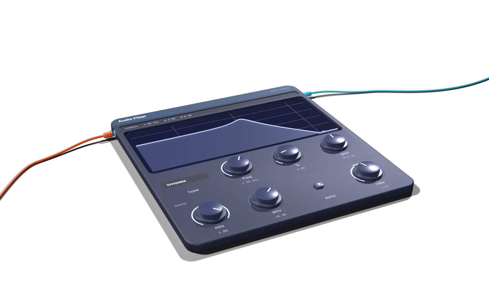
What even is Infinite? #
Infinite is a node-based studio for making sound and image at the same time. Instead of separate apps for music, visuals, and 3D, you drop blocks called nodes onto one canvas and connect them with cables: a synth feeding a filter, a shape feeding a kaleidoscope, a drumbeat feeding a bouncing particle field.
Because everything lives on the same clock, sound and image can react to each other in real time: a kick drum can punch a shape, a camera's motion can bend a synth's pitch, a colour can become a chord. There is no "render and wait". You hear and see the result the instant you plug a cable in.
This manual covers 347 spawnable node types across 28 node chapters, plus Chapter 29 on the app interface and a complete picture gallery. Looking to automate renders from the command line? See the Headless User Guide. Want to write custom DSP, shaders, or geometry kernels? See the Field Language Manual.
2D Sources & Visual Generators #
Every visual patch starts somewhere. These nodes make the first picture, from a photo on disk to a shape drawn from pure math, that everything downstream gets to distort, color, and remix.
Nodes in this chapter #
Image Source #
SOURCE · IMAGE OUTDrag a photo, PNG, JPEG, TIFF, or BMP straight from Finder onto the canvas and it becomes a live texture. This is the simplest way to get your own artwork, logo, or photography into a patch.
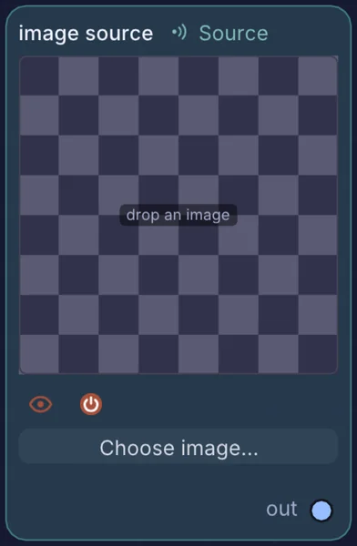
Video #
SOURCE · IMAGE OUTPlays back any movie file as a live texture, with a Loop switch and a speed dial, crank speed negative and it plays backwards. The simplest way to get found footage moving inside a patch.
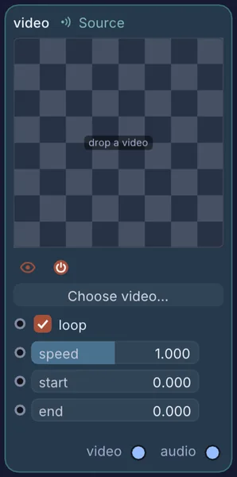
Video In #
SOURCE · IMAGE OUTCaptures a live feed straight from your Mac's camera, the built-in FaceTime HD camera, an external USB webcam, or a Continuity Camera iPhone, with a device picker, a resolution choice, and a mirror toggle for when a front-facing camera reads reversed.
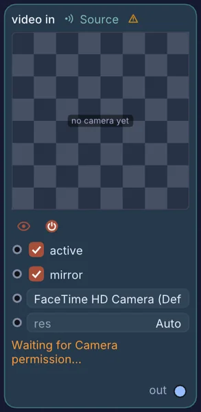
Syphon In #
UTILITY · IMAGE OUTPulls a live video feed straight out of another app publishing over the macOS Syphon protocol, OBS, Resolume, TouchDesigner, with no re-encoding. Great for bringing a camera feed or another VJ tool into Infinite's node graph.
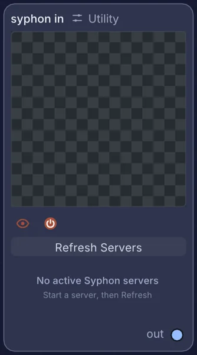
Shape #
SOURCE · IMAGE OUTDraws crisp, perfectly smooth vector shapes out of pure math, 20 primitives from simple circles and stars to hearts, gears, and blobs, no pixelation no matter how big you scale them. Fill, stroke, and roundness are all wide open.

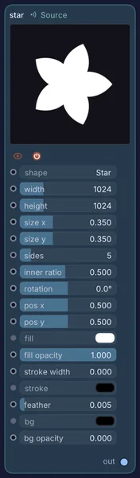
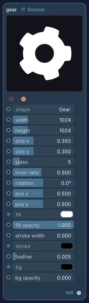
Noise #
SOURCE · IMAGE OUTGenerates organic, ever-shifting texture, soft clouds, ridged terrain, cell-like Voronoi and Worley patterns, or plain white static, from six procedural noise algorithms. It's the visual equivalent of static: raw material for almost everything else.
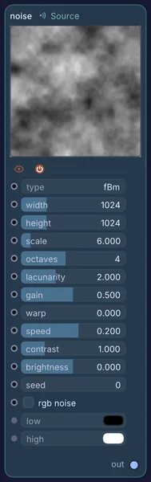
Texture #
SOURCE · IMAGE OUTA pattern factory with ten procedural surfaces on tap, bricks, cell clusters, swirling marble, wood grain, wave bands, checkers, clouds, and rocky Musgrave terrain, all generated live rather than loaded from a file, so they can be animated forever.
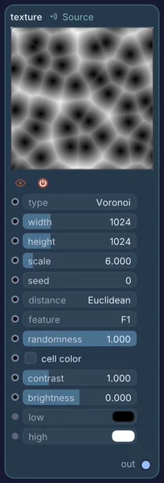
Ramp #
SOURCE · IMAGE OUTA clean two-color gradient, linear, radial, angular, diamond, or spiral. Perfect as a soft backdrop, a mask, or a blend driver for another effect.
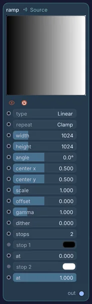
Formula #
SOURCE · IMAGE OUTA shader playground with more than two dozen ready-made looks baked in, plasma fields, Mandelbrot and Julia fractals, Truchet tiles, Voronoi cells, phyllotaxis spirals, each with four knobs you can wire up to anything else in the patch. For when you want something nobody else's patch has.
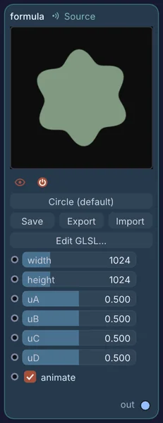
Draw #
SOURCE · IMAGE OUTA live paint canvas right inside the node graph, soft round, hard round, square, spray, chalk, and ink-bleed brushes, plus a dedicated eraser toggle. Anything you paint becomes a texture the rest of the patch can use immediately.
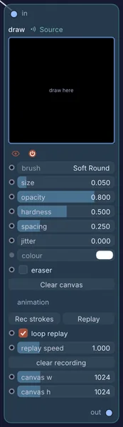
Typography & Text #
Words, on screen or in space. Both nodes read every font already installed on your Mac.
Nodes in this chapter #
Text #
TEXT · IMAGE OUTRenders crisp type using any font installed on your Mac via CoreText, titles, lyrics, captions. Alignment, size, and letter spacing are all adjustable live.
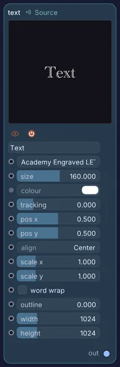
Text 3D #
3D · GEOMETRY OUTTakes the same lettering and extrudes it into a real, beveled 3D mesh you can light, rotate, and shade like any other object in the scene, logo stings and title cards with actual depth.
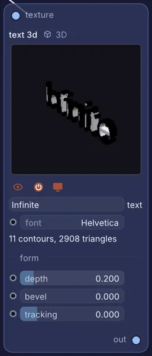
2D Image Effects, Blur, Warp & Glow #
Take any picture, a photo, a video, a shape, a render, and push it somewhere else. These sit in the middle of a chain, one image cable in and one out, so you can stack as many as you like. The next chapter lists every remaining filter on the shelf.
Nodes in this chapter #
Gaussian / Box Blur #
EFFECTS · IN/OUTTwo separate blur nodes for smoothing an image out, soft focus, depth-of-field, or just taking the edge off something too sharp. Often used right before a Bloom to make the glow itself feel softer.
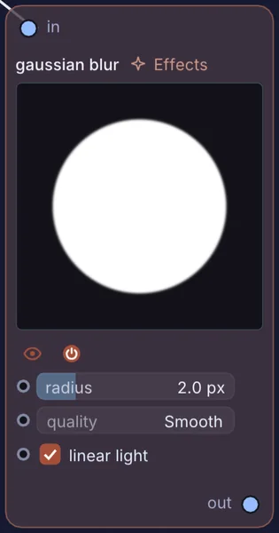
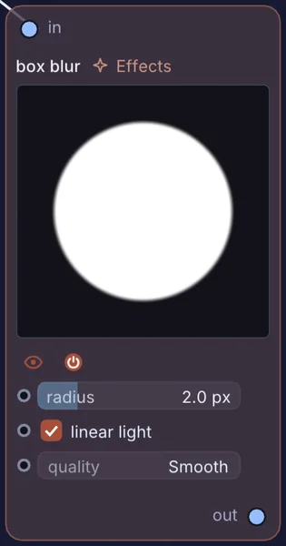
Motion Blur #
EFFECTS · IN/OUTStreaks an image in one direction, mimicking a fast camera pan or a subject moving quicker than the shutter can freeze. Instant sense of speed.
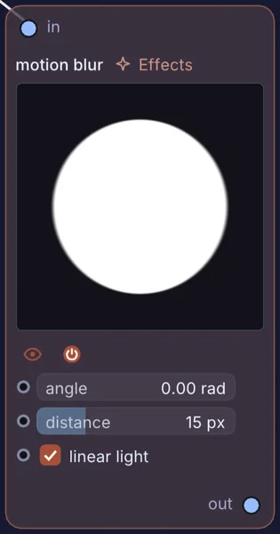
Radial Blur #
EFFECTS · IN/OUTBlurs outward from a single focal point you can place anywhere on screen, the classic zoom-punch effect used to slam attention onto one spot.
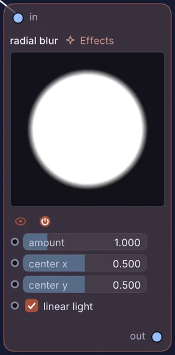
Bloom & Diffuse Glow #
EFFECTS · IN/OUTTwo related nodes that make bright areas glow and bleed light into their surroundings, the way a real camera lens does when it looks at something dazzling. One of the fastest ways to make flat visuals feel expensive.
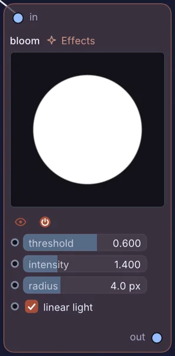
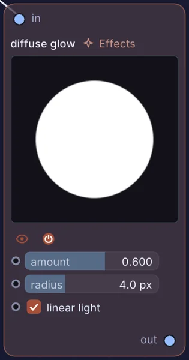
Glitch #
EFFECTS · IN/OUTSix flavors of broken-signal chaos, sliced frames, RGB channel splitting, scanlines, blocky corruption, waving distortion, and full datamosh. Dial it from a subtle VHS wobble to full digital meltdown.
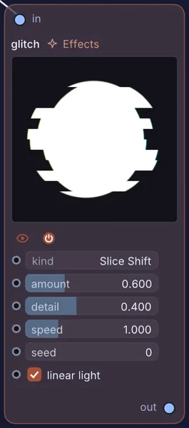
Twirl, Pinch/Punch & Ripple #
EFFECTS · IN/OUTThree separate optical-warp nodes: Twirl spins a vortex around a center point, Pinch/Punch magnifies or implodes like a lens, and Ripple sends concentric water rings out from a point. Chain any of them together for compound warps.
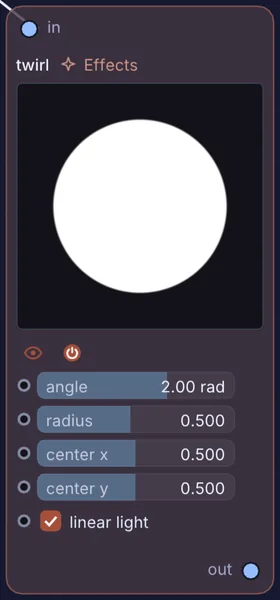
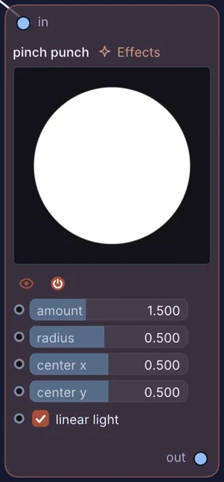
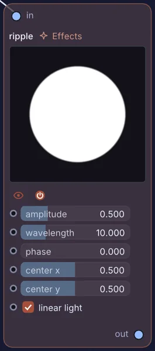
Kaleidoscope #
EFFECTS · IN/OUTSlices the frame into mirrored wedges around a center point, instantly turning ordinary footage into a mandala.
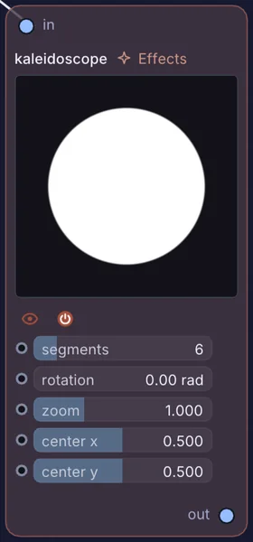
2D Image Effects, The Full Filter Shelf #
Infinite's image filters all share one C++ node class, but each of the 34 entries below spawns as its own node in the palette. The seven in Chapter Three got the full treatment; here's the rest of the shelf, one line each, straight from the shader source.
All 34 entries live in one shared table in the app's source; here they are grouped roughly by what they do, distortion & detail, color, and compositing & glow.
Nodes in this chapter #
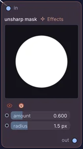
Unsharp Mask #
Sharpens the image by comparing it to a blurred version of itself and boosting the difference, controlled by Amount and Radius.
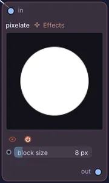
Pixelate #
Blocks the image into large flat squares to create a chunky, mosaic look, sized by Block Size.
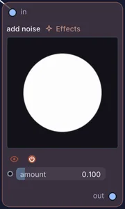
Add Noise #
Sprinkles random per-pixel grain onto the image, with Amount controlling how strong the speckling is.
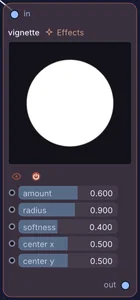
Vignette #
Darkens the corners and edges around a center point, with Amount for strength and Radius/Softness for how far the darkening spreads.
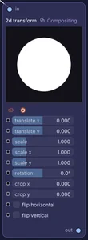
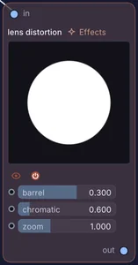
Lens Distortion #
Bulges or pinches the image like a camera lens and fringes the edges with color, controlled by Barrel curvature and Chromatic Aberration amount.
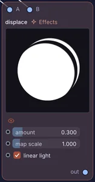
Displace #
Pushes pixels sideways using either a second connected image as a displacement map or, with nothing plugged in, an animated wavy pattern.
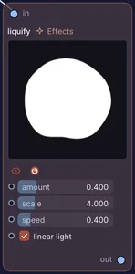
Liquify #
Warps the image with a smooth, flowing animated distortion like moving liquid, shaped by Amount, Scale, and Speed.
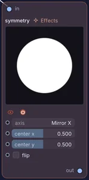
Symmetry #
Mirrors one half of the image onto the other across a chosen axis and center point, with an option to flip the whole result.
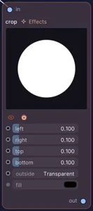
Crop #
Trims the edges of the image by set Left/Right/Top/Bottom amounts, then either leaves the trimmed area transparent, zooms in to fill the frame, or fills it with a solid color.
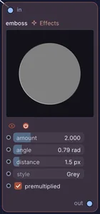
Emboss #
Turns the image into a raised, carved-relief look by comparing pixels on either side of a light direction, with Amount and Angle controlling depth and lighting.
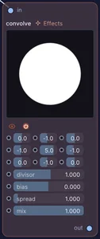
Convolve #
Runs a custom 3×3 grid of numbers over every pixel and its neighbors, letting you dial in blur, sharpen, edge, or emboss-style looks from nine kernel values.
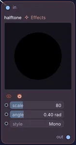
Halftone #
Recreates the image using a grid of dots sized by brightness (like a newspaper print), with Scale controlling dot density.
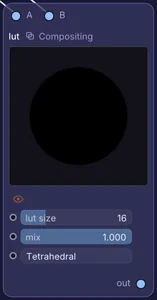
LUT #
Applies a color lookup table by wiring in a second texture as the LUT reference, the same idea colorists use for film-stock emulation.
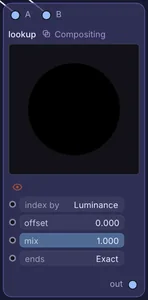
Lookup #
A related color-remap node that reads a reference gradient/table image to redirect each pixel's color.
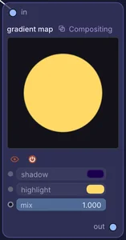
Gradient Map #
Recolors the image by mapping its brightness onto a custom two-color (or multi-stop) gradient.
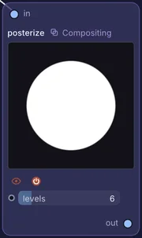
Posterize #
Reduces the image to a limited number of tonal steps per channel for a flat, poster-print look.
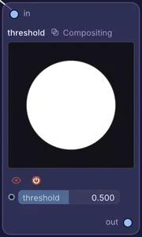
Threshold #
Converts the image to pure black and white based on a brightness cutoff point.
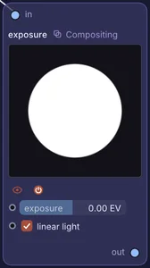
Exposure #
Brightens or darkens the whole image in stops, the same control a camera's exposure dial gives you.
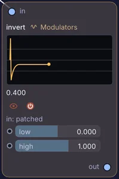
Invert #
Flips every color to its opposite, turning the image into its photographic negative.
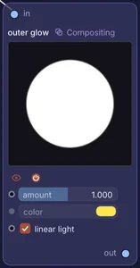
Outer Glow #
Adds a soft colored glow that blooms outward from the image's edges or transparency, with Amount for strength and Color for tint.
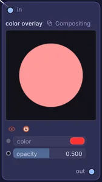
Color Overlay #
Tints the whole image toward a single flat color, with Opacity controlling how strongly the tint replaces the original colors.
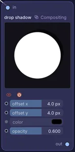
Drop Shadow #
Casts a soft offset shadow of the image's silhouette behind it, with Offset X/Y for direction and distance and Opacity/Color for its look.
Color Grading & Tone Mapping #
The finishing pass. Once the image is built, these nodes shape its mood, from a quick contrast bump to a full cinema-grade film look.
Nodes in this chapter #
Color Adjustments #
COLOR · IN/OUTYour all-in-one grading desk: brightness, contrast, levels, color balance, hue, saturation, vibrance, and a black-and-white switch, the same toolkit colorists use, chained together in one node.
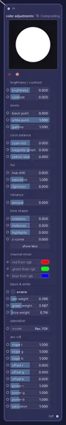
Curves #
COLOR · IN/OUTDraggable tone curves for the combined RGB channel plus red, green, and blue individually, the precise, hands-on way to push contrast or introduce a color cast exactly where you want it.
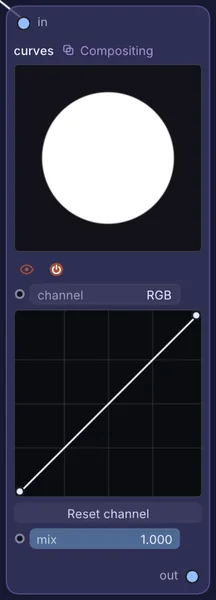
Color Ramp #
COLOR · IN/OUTRecolors any grayscale source by mapping its brightness onto a custom gradient with up to 32 stops, the classic trick for turning plain noise or a height map into something that looks painted.
LUT #
COLOR · IN/OUTApplies a color lookup table to your image by wiring in a second texture as the LUT reference, the same underlying idea colorists use for film-stock emulation, driven from an image input rather than a loaded file.
Compositing & Layering #
Where multiple pictures become one, and where you keep a busy graph readable. Everything here speaks the peach Image cable.
Nodes in this chapter #
Blend #
COMPOSITING · IN/OUTCombines two images with a wide range of blend modes, Multiply, Screen, Overlay, and more, plus an opacity dial. This is how you layer a glowing shape over live video, or double-expose two textures.
Layer Stack #
COMPOSITING · IN/OUTA multi-layer compositor with per-layer blend mode, opacity, and visibility, think of it as a mini layers panel living inside your node graph, for building a full scene from separate pieces without a tangle of individual Blend nodes.
Fit #
COMPOSITING · IN/OUTResizes and reflows whatever image comes in to a target width and height, with a mode of Fit (letterbox), Fill (crop to fill), Stretch (ignore aspect ratio), or Native (pass through). A background color and opacity fill any letterboxed edges.
Switcher #
COMPOSITING · IN/OUTCycles automatically among up to 4 connected image inputs on a timed interval (beats or seconds, synced to the transport), with a crossfade control blending the outgoing and incoming input, or a manual toggle to freeze on one chosen slot.
Null #
COMPOSITING · IN/OUTA zero-cost reroute point: it simply reports whatever texture is plugged into it as its own output, without rendering anything itself. Meant purely for tidying up cable runs in a busy patch.
Viewport #
COMPOSITING · IN/OUTFunctionally identical to Null (a free pass-through, no processing) but drawn with a large canvas, so you can actually inspect the image at a given stage of a patch instead of judging it from a tiny thumbnail.
Group #
COMPOSITING · ORGANIZERA resizable, colored backdrop for organizing the node editor, not a functional processing node, it has no output of its own. Any node sitting inside it gets dragged along when you move the group's header.
Comment #
COMPOSITING · ORGANIZERA plain annotation box, it does no image processing at all and produces no output. It just holds a block of text plus its own size and background color so you can label or explain parts of a patch.
Feedback, Trails & AI Vision #
Nodes that feed an image back into itself, or reach for on-device machine vision, turning one frame into an ever- evolving loop.
Nodes in this chapter #
Remove Background #
COMPOSITING · IN/OUTUses Apple's on-device Vision framework to cut a subject or person cleanly out of a live camera feed, no green screen required. Runs fast enough for live performance, with adjustable feather, threshold, and contrast on the cut edge.
Feedback & Trails #
COMPOSITING · IN/OUTTwo related nodes that feed a frame back into itself with a slight zoom, spin, or fade, the same trick behind classic video-feedback tunnels. Every new stroke or shape leaves a trail that spirals off into infinity.
Reaction Diffusion #
COMPOSITING · IN/OUTSimulates the same Gray-Scott chemistry that grows animal spots, coral, and cellular patterns in nature, feed it a nudge and organic, living patterns spread and evolve on their own.
Resynthesize #
EFFECTS · IN/OUTAn iterative image mutator: instead of reprocessing the original source each frame, it feeds its own previous output back into itself and mutates it again, so the image drifts progressively further from the source over generations. An XY pad cross-fades between eight mutation operators, and its motion can be recorded and looped.
3D Building Blocks & Materials #
Meshes and the surfaces they wear. These nodes speak the green Geometry cable, and everything eventually plugs into Render 3D to become a picture.
Nodes in this chapter #
Geometry Primitives #
3D · GEOMETRY OUTA deep library of 3D building blocks, cube, sphere, icosphere, cylinder, cone, torus, plane, disc, and more exotic forms like torus knots and Möbius strips, with adjustable tessellation so they stay smooth up close.
Model 3D #
3D · GEOMETRY OUTImports your own 3D models, OBJ, PLY, STL, or USD/USDZ, with automatic centering and scale normalization, so anything exported from Blender or elsewhere just drops in and works. (glTF and FBX aren't supported yet.)
Material #
3D · IN/OUTOverrides the surface material of whatever geometry passes through it, so one authored look can be shared by several shapes. Exposes a full PBR set, color, metallic, roughness, opacity, emission, IOR, transmission, clearcoat, sheen, iridescence, and can take up to eight image inputs to paint any of those channels from a texture.
Displacement #
3D · IN/OUTPhysically pushes a mesh's vertices using a texture, real 3D geometry displacement, distinct from the 2D Displace/Liquify image filters, which only warp a flat image and never move actual geometry. Offsets vertices by a strength and midlevel, with flat-shading and normal-flip options.
Mapping #
3D · IN/OUTChanges how a material's texture maps are looked up on a surface without altering the mesh itself, UV, Generated, or Object coordinate space, plus per-axis offset, rotation, scale, and a triplanar-blend control.
Wrap #
3D · IN/OUTConforms one mesh onto the surface of another, every source vertex moves to the nearest point on the target's surface, real shrinkwrap-style deformation. Offers Cylindrical, Spherical, and Nearest Surface modes plus a bend radius and blend amount.
Curve #
3D · GEOMETRY OUTGenerates a spline that works two ways: as visible tube geometry (adjustable radius, sides, taper) and as a path other nodes can follow. Builds from up to 8 control points using Catmull-Rom, Bezier, B-spline, or linear interpolation, closeable into a loop.
Null 3D #
3D · IN/OUTA pure pass-through for a geometry cable, forwards the mesh, material, and mapping from its single input unchanged. Exists purely to route or organize a 3D chain, the geometry equivalent of the plain Null node.
3D Points, Instancing & Mesh Ops #
Scatter, stamp, and clean up geometry at scale, the toolkit for turning one shape into a thousand, or a cloud of points into solid form.
Nodes in this chapter #
Instance on Points #
3D · IN/OUTStamps a copy of one mesh onto the points of another, turning a single object into a scattered crowd drawn as GPU instances, one draw call for thousands of copies. Points can come from vertices, edges, faces, or a point cloud, with per-instance scale/rotation randomization and normal alignment.
Distribute Points on Faces #
3D · IN/OUTScatters points evenly across the surface area of an input mesh (area-weighted, not vertex-based) so coverage stays uniform even on meshes with uneven face sizes. Offers Random or Poisson Disk (even minimum spacing) methods.
Distribute Points in Grid #
3D · GEOMETRY OUTGenerates a plain rectangular lattice of points from scratch, no geometry input needed, with adjustable count, spacing, jitter, and per-point size. Its point ordering deliberately matches Image to Points, so the two line up point-for- point at equal counts.
Image to Points #
3D · IN/OUTConverts an image into a point cloud, one particle per sampled pixel on a density grid, with brightness pushing each point out of a flat plane by a depth amount, and darker pixels dropped entirely so a cutout image reads as a shape.
Points to Vertices #
3D · IN/OUTConverts an incoming point cloud into a bare mesh made only of vertices, no edges, no faces, so cloud data can re- enter mesh-only operators like Merge by Distance.
Set Color #
3D · IN/OUTWrites a color onto every vertex or particle of whatever geometry feeds it, from a flat color, a position/normal-driven gradient ramp, per-element random color, a palette swatch, or a texture lookup.
Join Geometry #
3D · IN/OUTMerges up to four geometry inputs into a single mesh, using plain concatenation or real CSG Union/Intersect/Difference. Each input's own transform is baked in before combining.
Merge by Distance #
3D · IN/OUTWelds vertices that lie within a threshold distance of each other, the cleanup pass that closes seams left behind by a scatter or conversion node, or, cranked up, collapses geometry together outright.
Metaballs #
3D · IN/OUTGenerates blobs that smoothly merge into one another rather than intersecting with hard edges, surfaced via marching cubes over a summed field of up to 8 balls. Can also take a point-cloud input, letting a particle system be surfaced as a liquid-like blob.
Resynthesize 3D #
3D · IN/OUTThe 3D counterpart to the image Resynth node, each generation mutates the previous generation, not the original input, so the mesh drifts progressively over time via displace, jitter, smooth, twist, bulge, extrude, subdivide, and squash operators.
3D Simulation, Scene & Render #
Physics, the camera, the lights, and the render pass that turns geometry into a picture.
Nodes in this chapter #
Ocean Surface #
3D · GEOMETRY OUTA physically-inspired ocean built from real Gerstner wave mathematics, tune amplitude, wavelength, steepness, direction, choppiness, and speed for anything from glassy calm to a churning storm.
Cloth Simulation #
3D · IN/OUTTakes any mesh, usually a flat plane, and drapes it like real fabric using position-based dynamics, with stiffness, damping, mass, gravity, and wind you can push around live for anything from a stiff flag to a silky drape.
Particle System #
3D · GEOMETRY OUTSpawns and simulates a stream of moving points with adjustable emit rate, lifetime, initial speed, and turbulence, sparks, dust, snow, or drifting motes, all reacting in real time.
Camera #
3D · OUTDefines the viewpoint for Render 3D, perspective or orthographic, field of view, distance/azimuth/elevation orbit around a target, roll, and clip planes. An orbit-per-beat value spins the camera automatically for turntable shots.
Light #
3D · OUTDefines a single light source for Render 3D, Directional, Point, Sun, Ambient, or Spot, with azimuth/elevation/distance placement, color, intensity, falloff, and cone angle/softness for spots. Can also orbit automatically over time.
HDRI #
3D · OUTLoads an equirectangular HDR/EXR image and hands it to Render 3D as a real image-based environment, replacing the built-in sky gradient. Exposes intensity and a rotation so you can dial in brightness and spin where reflections and light come from.
Switcher 3D #
3D · IN/OUTCycles between up to four connected 3D geometry inputs, forwarding whichever is currently active rather than blending them, a hard cut, timed by beats/seconds or set manually. The geometry-side counterpart to the image Switcher.
Audio Displacement #
3D · IN/OUTDeforms a mesh in real time from live audio, with five modes: waveform push, FFT-spectrum warp, concentric ripples, Chladni-plate standing-wave patterns, or a straight axis push. Includes attack/decay smoothing and a real-time subdivision level.
Audio Ribbon #
3D · OUTBuilds its own ribbon-shaped mesh directly from an audio signal, no upstream geometry needed. Width, height scale, segment count, gain, and smoothing are all adjustable, alongside its own transform and material.
Render 3D #
3D · IMAGE OUTThe camera and lighting engine that turns every 3D node into a real picture, physically-based Cook-Torrance/GGX materials, ACES tonemapping, and MSAA antialiasing, all live, with up to 4 geometry inputs plus camera, light, and HDRI. This is where the green Geometry cables turn back into a peach Image cable.
Audio Synthesizers #
Where sound is born. These nodes turn silence, or notes coming in from an arpeggiator or MIDI controller, into audio you can hear and process.
Nodes in this chapter #
Wavetable Synth #
SYNTHS · AUDIO OUTThe flagship synthesizer: 64 wavetables you can morph smoothly between across 8 frames, up to 8-voice unison for thickness, a resonant filter, and three independent ADSR envelopes shaping amplitude, filter, and pitch over time.
Oscillator #
SYNTHS · AUDIO OUTA single-voice synth on the wavetable engine, offering four waveforms (Sine, Triangle, Saw, Square) with pitch, glide, pitch bend, and an audio-rate FM/PM input whose depth and mode you control directly.
Wave Terrain #
SYNTHS · AUDIO OUTTurns any 2D image or video texture into a "terrain" surface and reads audio by tracing a closed orbit across it, Circle, Lissajous, Lemniscate, Spiral, or Scanline, with full unison, an amp envelope, and a multi-mode filter.
Equation Synth #
SYNTHS · AUDIO OUTA Desmos-style oscillator: type a formula like y = sin(x + a) and it renders that curve as an anti-aliased, polyphonic wavetable waveform, so turning knobs A through D actually reshapes the wave's math instead of just modulating a fixed one. A full voice sits behind it, unison, an amp envelope, and a resonant filter with its own envelope.
Spectral Synth #
SYNTHS · AUDIO OUTReads an image as a spectrogram: it scans horizontally while each row of pixels defines the amplitude of one of a bank of up to 256 sine partials, so a picture's brightness pattern literally becomes the sound's harmonic content.
Metallic Resonator #
SYNTHS · AUDIO OUTPhysically models how real metal and glass actually ring when struck, eight material presets from Steel and Bell Bronze to Glass/Crystal and Vibraphone Bar, a genuinely resonant, inharmonic decay rather than a synthetic approximation.
Sampler #
SYNTHS · AUDIO OUTLoad a file or record incoming audio, then play it back one-shot or looping (forward, reversed, or ping-pong) with independent pitch, finetune, and varispeed, and two playback lanes, polyphonic (MIDI-driven) and monophonic (free- running).
Slicer #
SYNTHS · AUDIO OUTChops a loaded or recorded sample into slices, either by onset detection or by a grid locked to the transport tempo, and maps them chromatically across the keyboard starting at middle C, the classic MPC/Simpler-style chop workflow.
Granular #
SYNTHS · AUDIO OUTA real-time granular synthesizer that shreds a loaded or recorded sample into micro-grains and re-stitches them, with grain length, density, scan speed/position (with freeze), and stochastic randomization on position, length, pitch, and pan.
PaulStretch #
SYNTHS · AUDIO OUTStretches any audio file up to 1000 times longer without changing its pitch, turning a two-second vocal snippet into an hours-long, slowly shifting ambient texture. The classic "everything sounds like a choir of angels" trick.
Molder #
SYNTHS · AUDIO OUTAn evolving sound-design tool: it decomposes a recorded sample into tracked harmonic partials plus residual noise, then Roll mutates a parameter genome and re-renders a new sample from that, each roll drifting further from the last, not from the original source.
Grain Molder #
SYNTHS · AUDIO OUTSlices audio into overlapping grains, measures each one's loudness, brightness, or a random tag, and re-orders them along a blend between the original chronological order and a fully metric-sorted arrangement, at full amount it turns any recording into a rising or falling contour.
Drum Sequencer #
SYNTHS · AUDIO OUTAn 8-track, 8-step sequencer for your own samples, complete with swing groove, mutes, and solos, build a full beat without leaving the canvas, and tap any lane's trigger to drive visuals too.
Audio Effects & Plugin Hosting #
Shape sound after it's been made, filters, space, grit, and a doorway to Audio Units already installed on your Mac. Like the image filter shelf, every effect below shares one C++ class but spawns as its own node.
Nodes in this chapter #
Audio Filter #
AUDIOEFFECTS · IN/OUTA classic analog-style filter with 12 types on tap, low-pass and high-pass at 12/24/36 dB per octave, band-pass, notch, shelves, and peak, with an envelope follower for auto-wah and a sidechain input so another sound can sweep the cutoff for you.
EQ #
AUDIOEFFECTS · IN/OUTA five-band studio equalizer with a live filter-response curve you can see and drag, carve out mud, add air, or fix a harsh frequency, watching the curve move as you turn each knob.
Plugin #
AUDIOEFFECTS · IN/OUTLoads any Audio Unit you already own, synth or effect, right into the graph, with its native interface and up to 32 of its parameters exposed for modulation like any other Infinite node.
Delay #
AUDIOEFFECTS · IN/OUTA tempo-synced ping-pong delay with feedback, tone shaping, panning, and ducking, everything from a tight slapback to a rhythmic, bouncing echo.
Reverb #
AUDIOEFFECTS · IN/OUTAn algorithmic reverb with room size, decay time, damping, pre-delay, and stereo width, a wash big enough to sound like a cathedral, or small enough to feel like a tiled room.
Drive #
AUDIOEFFECTS · IN/OUTWarm analog-style tube-and-transistor saturation with drive, bias, tone, and color controls, a gentle glow at low settings, real grit when you push it.
Bitcrush #
AUDIOEFFECTS · IN/OUTA separate lo-fi crusher: independent sample-rate (down to 200 Hz) and bit-depth (down to 1 bit) reduction for anything from a subtle vintage-sampler grit to full digital destruction.
Field Effect #
AUDIOEFFECTS · IN/OUTRuns a Field kernel once per audio sample as a custom effect you write yourself, declare a bit of state for a delay line or filter memory, declare a param for an automatic modulatable knob, and write the DSP math directly instead of hunting for the right built-in. See Chapter Twenty for the Field language itself.
Dynamics #
A compressor that squashes loud peaks down once they cross a Threshold, tightening dynamics by a set Ratio, with Attack/Release/Makeup rounding out the feel.
Limiter #
A brick-wall ceiling that catches anything above the Threshold and prevents it from getting louder, with In/Out Gain to drive it harder or make up level.
Stereo #
Widens or narrows the stereo image with a Width knob (0 collapses to mono), plus Pan and a Bass Mono control that keeps low end centered.
Pitch Shifter #
Shifts pitch up or down by semitones (up to two octaves either way) using a delay-line pitch shifter, with Grain size shaping the artifacts.
Chorus #
Thickens the sound with multiple slightly detuned, delayed copies, with Delay time and Depth of the wobble and a free or tempo-synced Rate.
Flanger #
Creates a sweeping, jet-plane whoosh by mixing a short modulating delay with Feedback back into the signal.
Phaser #
Sweeps notches through the sound for a swirling effect, set by a Cutoff center frequency, Depth, and Rate.
Transient Shaper #
Reshapes the punch of a sound by independently boosting or cutting the Attack (the initial hit) and the Sustain (the tail).
Stutter #
Repeats a short slice of audio like a glitchy loop, with tempo-synced or free timing and a step/gate mask controlling which repeats play.
Ring Mod #
Multiplies the signal by an oscillator to produce bell-like, metallic, robotic tones, with adjustable frequency and waveform.
Frequency Shifter #
Shifts every frequency in the sound up or down by a fixed Hz amount (not musically, like pitch), creating inharmonic textures, with Feedback adding spiraling "barber pole" motion.
Tremolo #
Pulses the volume up and down with an LFO, set by Depth and a free or tempo-synced Rate.
Formant Filter #
Gives the sound a vowel-like, talking/singing quality by morphing between A-E-I-O-U formant shapes, with Q controlling resonance.
The Audio Effects category holds 20 entries sharing one DSP-hosting node class; the seven above got the full treatment, here's the rest of the shelf.
Audio Utility & Routing #
The plumbing that gets sound in, mixed, split, and out, plus two nodes for turning sound into a picture.
Nodes in this chapter #
Gain #
UTILITY · IN/OUTA simple audio level control: one dB knob raises or lowers the volume of the signal running through it, with an inline meter showing the output level.
Audio In #
UTILITY · OUTTaps the computer's live input device (microphone or line-in) and brings it into the patch, with a gain trim and its own input-level meter.
Audio Out #
UTILITY · INThe terminal endpoint of an audio chain, takes exactly one audio input and sends it to the real output device, and can record straight to a file in WAV, FLAC, or MP3.
Mixer #
UTILITY · IN/OUTThe app's dedicated summing node, taking up to 8 input slots, each with its own gain, pan, and mute, plus a per-channel peak meter and an overall summed-output meter.
Splitter #
UTILITY · IN/OUTThe explicit fan-out point for audio: since an audio output can only feed one destination, Splitter takes one input and makes it available to up to 4 downstream consumers as a passthrough copy.
Blend Audio #
UTILITY · IN/OUTA two-input crossfader with a single Blend control: 0 plays only input A, 1 plays only input B, and 0.5 gives an equal- power blend of both.
Audio Texture #
AUDIO · AUDIO IN, IMAGE OUTTurns an incoming audio signal into an image, rendering either a live Waveform or a Spectrum (FFT) view into a GPU texture, with adjustable FFT window size and smoothing.
Audio Color Ramp #
COMPOSITING · AUDIO IN, IMAGE OUTSplits incoming audio into up to 8 frequency bands and maps each one to a color, Intensity mode glows a stop brighter with its band's energy, Expansion widens it, and Spectrum paints a continuous FFT sweep across the palette. Patch an image in and it grades that image through the audio-reactive gradient instead of outputting the gradient alone.
MIDI & Note Shaping #
The note stream comes in from a keyboard or controller; these nodes reshape it, filtering, transposing, humanizing, and timing-correcting, before it reaches a synth. All flow over the lavender Note cable.
Nodes in this chapter #
MIDI Notes #
NOTES · OUTThe note source, reads live MIDI input and turns it into note events for the rest of the chain, with a channel selector, a transpose knob, a velocity scale, and an option to snap incoming notes to the global key/scale. An input device dropdown picks which controller it listens to (or all of them), and Learn sets the device and channel from the next key you play.
Note Filter #
NOTES · IN/OUTA gate on which notes get through, combining a scale/key filter, a pitch range, and a percent chance, a note only passes if it clears all three checks.
Note Transpose #
NOTES · IN/OUTShifts every note by a fixed number of semitones, with an option to snap the result to the global scale. The shift is applied once at note-on and remembered for that note, so a held note's release always lands on the matching pitch.
Pitch Bend #
NOTES · IN/OUTA live pitch-bend knob (±2 semitones) that adds into each note's continuous bend amount rather than re-triggering the note, so moving it while a note is held slides that note's pitch in real time.
Velocity Curve #
NOTES · IN/OUTReshapes how hard you hit the keys maps to output velocity, using a single curve exponent, below 1 boosts soft hits, above 1 favors hard hits.
Gate #
NOTES · IN/OUTControls how long each note rings out with a single hold-time knob. At 0 it's a passthrough; above 0 it ignores the real note-off and schedules its own fixed duration for every note.
Humanizer #
NOTES · IN/OUTAdds random imperfection to a note stream with two independent knobs: timing jitter (when a note actually fires) and velocity jitter (how hard it hits). Both default to off.
Quantizer #
NOTES · IN/OUTSnaps each note-on forward in time to the nearest grid line, never earlier than when the note actually arrived, at a chosen musical division.
Glide #
NOTES · IN/OUTFills the gap between one played note and the next with a fast run of very short in-between notes, approximating a portamento slide since the note system has no continuous pitch to bend smoothly.
Note Echo #
NOTES · IN/OUTRepeats every incoming note a set number of times, each repeat spaced further apart, getting quieter and optionally shifting in pitch. The original note always plays first unchanged.
Generative & Physical Note Nodes #
Nodes that write their own music, from a classic arpeggio pattern to a physics playground that composes melodies from bouncing balls, plus the mergers and switchers that manage several note streams at once.
Nodes in this chapter #
Arpeggiator #
NOTES · IN/OUTTakes held notes and breaks them into a rhythmic, tempo-locked pattern, Up, Down, Up-Down, Random, As-Played, and a dozen more traversal modes, with 1 to 4 octaves of range.
Chorder #
NOTES · IN/OUTTurns a single held note into a full chord, with adjustable chord size, a strum offset, humanized timing and velocity, and scale quantization so nothing plays a wrong note.
Note Sequencer #
NOTES · OUTA dedicated step sequencer for melody, up to 16 steps, each with its own note, velocity, and on/off toggle, plus a gate- length control for how long each step rings out.
Bouncing Balls #
NOTES · OUTA physics playground that turns bouncing balls into music, balls glide inside a container shape and fire a note, quantized to a musical scale, every time they hit a wall. Gravity doesn't pull them down; the bounce pattern writes the melody.
Note Router #
NOTES · IN/OUTThe system's note fan-out node: one input split across four separate outputs, chosen by Round Robin, Random, Probability, or Chain mode. A note's matching note-off always replays to the same output it was sent to.
Note Merge #
NOTES · IN/OUTThe note system's fan-in counterpart to Note Router: merges up to 4 note streams into one output in timestamp order, keeping each input's notes as independent voices so two sources playing the same pitch at once sound as two overlapping notes instead of colliding.
Note Switcher #
NOTES · IN/OUTThe note-cable counterpart of the image and 3D Switcher, cycles between up to four connected note sources on a timed interval or a manual slot, so a synth downstream hears only whichever source is currently active.
Random Note Generator #
NOTES · OUTA self-running generator that produces its own note stream via a bounded random walk, each new note is the previous note plus a small random offset, clamped and quantized to a chosen scale and root. No note input needed.
Note Stack #
NOTES · IN/OUTLayers up to 8 extra transposed copies on top of every note that passes through, with the original note always passing through underneath. Each voice has its own semitone offset and on/off switch.
Note Capturer #
NOTES · IN/OUTRecords whatever note stream feeds it, with tempo-relative timing so it stays in sync even if the BPM changes, then loops that recording back on top of the live input, which always keeps passing through.
Note Strum #
NOTES · IN/OUTTakes a chord's simultaneous notes and spreads their onsets across time in ascending pitch order, like a strummed guitar, while keeping each note's original gate length intact.
Modulators, Shape & Combine #
The wiggling knobs that bring a patch to life. These nodes generate or reshape a signal on the sapphire Modulator/CV cable, which can plug into almost any parameter in the app.
Nodes in this chapter #
LFO #
MODULATORS · OUTA slow, repeating wave, sine, triangle, saw up, saw down, square, or sample-and-hold, that you plug into almost any knob in the patch to make it move on its own, in time with the music if you like.
Random #
MODULATORS · OUTGenerates a new target value on a timer, then eases toward it using a smoothing amount, 0 for hard stepped changes, higher for a fully eased curve. Low/High rescale the range, and each node spawns with its own seed.
Pattern #
MODULATORS · OUTA 16-step sequencer whose value steps through hand-set slots once per set beat length, looping back to the start, with a smoothing option to ease between adjacent steps instead of jumping.
Math #
MODULATORS · OUTCombines two other modulator signals using one of ten operations, add, subtract, multiply, divide, min, max, average, and more, then scales and offsets the result.
Compare #
MODULATORS · OUTTests two modulator inputs against each other using >, >=, <, <=, ==, or != and outputs a hard 1 or 0, with a tolerance value for the equality checks.
Range to Range #
MODULATORS · OUTLinearly remaps an input modulator from one span to a different output span, with an option to clamp the result inside the output bounds.
Smoothing #
MODULATORS · OUTRuns an exponential moving average over an input modulator, with an amount knob setting the filter strength, taking the edge off a stepped or noisy source.
Invert #
MODULATORS · OUTMirrors an input modulator around a low/high pivot, so rises become falls and vice versa, and it still behaves correctly on signals that run outside the usual 0..1 range.
Mod Curve #
MODULATORS · OUTReshapes an input modulator through a user-drawn transfer curve, with a mix knob blending between the raw input and the fully-curved result.
Modulators, Control & Performance #
Knobs, pads, and hardware bridges meant to be touched live, plus the utility nodes that hold a modulation chain together.
Nodes in this chapter #
Mod Depth #
MODULATORS · OUTScales how much of an incoming modulator's swing reaches its destination with a single depth knob from -1 to 1, at 0 the signal has no effect, negative values invert it while still scaling.
Macro Knob #
MACROS · OUTA single manually-set control meant to be performed rather than left alone, with a curve exponent to ease the response in or out and an invert switch.
Macro Slider #
MACROS · OUTA plain 0-to-1 fader, the simplest possible performance control, meant to be grabbed and pushed rather than automated.
Macro Bipolar Knob #
MACROS · OUTA center-detent knob that swings -1 to +1 rather than 0 to 1, so its resting position genuinely means "no effect", ideal for anything you want to push both directions from a neutral center, like a pan or a pitch bend.
Macro XY #
MACROS · OUTA 2D performance pad, grab it with a mouse or trackpad to fling two parameters around at once, live. It can also record a path you drag out and loop it back for hands-free, repeating motion.
Macro Toggle #
MACROS · OUTA latching on/off switch, plain and simple, click once to flip it on, click again to flip it off.
Macro Trigger #
MACROS · OUTA momentary bang pad: it fires to 1 the instant you press it and drops back to 0 the instant you release, with its own flash so you can see exactly when it fired.
Macro NumBox #
MACROS · OUTA draggable, typeable number box with its own min/max/step range, for a performance control where you want to see and dial in an exact value rather than eyeball a knob's position.
Macro Radio Selector #
MACROS · OUTA discrete multi-choice selector, pick one of a set number of options and it outputs that choice's position, evenly spaced across 0 to 1.
Macro Step Gate #
MACROS · OUTAn 8-step rhythmic gate sequencer locked to the transport, toggle any of the 8 steps on or off and it outputs a 1-or-0 pulse in time with the beat, by default at sixteenth notes.
MIDI CC #
MODULATORS · OUTMIDI Learn for a single physical control on your USB MIDI hardware, click Learn, twist the knob, and it remembers that device's exact channel and controller number.
MIDI Trigger #
MODULATORS · OUTTurns a MIDI pad hit into a decaying envelope pulse (Pad mode, bound to one note), or reports whichever note was last played on the channel (Keyboard mode).
Path #
MODULATORS · OUTMoves a point along a shape over time, Circle, Line, Figure Eight, Helix, Spiral, or Lissajous, outputting separate X, Y, Z, and progress channels, tempo-synced by default.
Constant #
MODULATORS · OUTOutputs one fixed, unmoving value, exists because math-utility nodes only take other modulators as input, so this supplies a literal number.
Null Modulator #
MODULATORS · IN/OUTA zero-cost pass-through junction for a modulator cable, useful as a named point in a chain where you can read a live value meter or branch one signal to several destinations.
Palette #
MODULATORS · OUTExtracts a small color palette from a reference image or live video, clustering colors in Oklab space with sort, chroma, and mood-shaping controls (hue shift, saturation, brightness).
Modulators, Audio/Note Bridges & Analysis #
The converters that translate between worlds, audio into control voltage, notes into control voltage, geometry into control voltage, and raw sound or image into a stream of numbers a patch can react to.
Nodes in this chapter #
CV to Pitch #
MODULATORS · OUTQuantizes a continuous modulation signal into semitone steps, optionally snapped onto a chosen scale and root, with a glide option for portamento smoothing on the stepped output.
Note to CV #
MODULATORS · OUTConverts an incoming note stream's pitch into a normalized control voltage, holding the last played note's pitch rather than falling back to zero on release, a pitch tracker, not a gate.
Audio to CV #
MODULATORS · OUTAn envelope/amplitude follower that converts a live audio signal into a modulation signal, with gain, attack/release smoothing, and a peak/RMS detection mode.
Geometry Table #
MODULATORS · OUTSamples up to 16 points off a patched mesh and reports each one as its own X/Y/Z modulator, plus an overall centroid and spread, turning the literal shape of a piece of geometry into a bank of control voltages. Vertex, Scatter, and Contour sampling modes read different things off the source, and an offset control scrubs a read head across it without re- sampling.
Vibrato #
MODULATORS · OUTA simple free-running sine LFO with one control, rate in Hz, meant as a substitute for true per-note vibrato, since note events have no continuous pitch channel of their own.
Envelope #
MODULATORS · OUTApplies a classic ADSR contour to a continuous modulation signal rather than a note trigger, the "gate" is derived from the input crossing a threshold rather than a note-on/off.
Audio File #
MODULATORS · OUTLoads and plays back an audio file independently of the live mic/line input, exposing the same analysis taps as live input so a backing track can drive visuals deterministically.
Audio Analyze #
MODULATORS · OUTListens to any audio and splits it into 8 frequency bands plus a transient onset trigger, the node that lets visuals genuinely react to music, band by band, hit by hit.
Image Analyze #
MODULATORS · OUTThe visual mirror of Audio Analyze, reads brightness, color channels, saturation, hue, motion, and where the action is happening on screen, turning all of it into modulation.
Output & Sharing #
The final door out, to your speakers, your screen, another app, or a real projector.
Nodes in this chapter #
Output #
UTILITY · TERMINALThe last node in every patch, sends your visuals and audio to the screen and speakers, and can record both to disk at once as an H.264 movie, ready to share or edit further.

Syphon Out #
UTILITY · INBroadcasts whatever image, 3D render, or shader is plugged into it out to other Mac apps in real time, Resolume, OBS, TouchDesigner, MadMapper, via zero-copy GPU memory sharing, with a customizable server name.
Projection #
UTILITY · INA projection-mapping and warping node for driving real projectors, 4-corner perspective warping or a subdivided mesh- grid warp, with built-in alignment test patterns for lining up a physical projector.
OSC Receive #
UTILITY · OUTListens on a network port for OSC messages matching an address pattern and reports the last value received as a modulator, remapped to a low/high range, it patches in exactly like an LFO or Random node, just driven by another app or device instead.
OSC Send #
UTILITY · INThe one node with no output at all: it reads whatever modulator is patched into it and sends its value out over the network as an OSC message, so a lighting console, Max/MSP patch, or another OSC-speaking app can react to what's happening inside Infinite.
The Field Language, Programmable Nodes #
The newest, deepest chapter in the palette: five nodes that don't offer a preset list at all, they offer a text box. Write a little math, and Infinite compiles it straight to the right engine for the job.
Five nodes let you write your own behavior directly into a node instead of picking from a fixed list. Type a small block of code, a kernel, and Infinite runs it automatically, once for everything it needs to touch: once per point on a mesh, once per pixel on screen, once per sample of audio. You never say how many times or how fast to run it, the node figures that out from what your code actually touches. It is a tiny programming language built for exactly one job, and it turns each of these five nodes into a blank canvas instead of a fixed preset list.
Deep dive: Read the Field Language Manual for full syntax, domain transfer operators, and device building.
Nodes in this chapter #
FieldPixel #
SOURCE · IMAGE OUTRuns your kernel once per pixel, compiled straight to a real GPU shader, an image generator or effect you write from scratch instead of picking off a shelf. It can declare its own state, a persistent texture it remembers between frames, so feedback-style effects that need memory are possible in one self-contained node.
Field Modifier #
3D · IN/OUTRuns your kernel once per vertex of an incoming mesh, letting you rewrite position, normal, color, or any custom attribute with plain math instead of picking from a fixed deformer list. Leave the geometry input empty and it generates its own points instead, acting as a source.
Field Primitive #
3D · GEOMETRY OUTA pure generator: builds 3D point geometry entirely from your kernel, starting from a topology scaffold, points, a plane, a sphere, a torus, that your code then reshapes. Presets like Fibonacci Sphere, Spiral, and Torus Knot show what's possible from just a formula.
Field Synth #
SYNTHS · AUDIO OUTA polyphonic synthesizer whose entire voice algorithm is a kernel you write yourself, run per-voice on the audio thread, your own oscillator, FM algorithm, or wavetable scheme as plain math instead of a fixed engine.
Field Effect #
AUDIOEFFECTS · IN/OUTRuns a kernel once per audio sample as a custom effect, declare a bit of state for a delay line or filter memory, declare a param for an automatic modulatable knob, and write the DSP math yourself instead of hunting for the right built-in. Also cataloged in Chapter Twelve alongside the rest of the effects shelf.
More Shapes & Slideshows #
Ten more 2D sources: a picture slideshow that steps on the beat, and nine vector shapes that each do one thing well. Like Shape, every one is drawn from pure math, so they stay razor sharp at any size and every control can be animated.
Nodes in this chapter #
Slideshow #
SOURCE · IMAGE OUTSteps through a folder of images on a beat interval, with an optional crossfade between them. Point it at a folder and it becomes a self-running photo reel locked to the tempo.
Ellipse #
SOURCE · IMAGE OUTA filled or stroked ellipse. Aspect stretches it away from a perfect circle, so one dial takes you from a dot to a wide lens shape.
Rectangle #
SOURCE · IMAGE OUTA filled or stroked rectangle with an optional corner radius. The simplest building block for panels, bars, frames, and mattes.
Rounded Rect #
SOURCE · IMAGE OUTA rectangle with rounded corners. It is the same as Rectangle, but the corner radius gets its own control so you can animate it directly.
Polygon #
SOURCE · IMAGE OUTA regular polygon, and Sides sets how many. Three is a triangle, five a pentagon, and a high number slides toward a circle.
Hexagon #
SOURCE · IMAGE OUTA six-sided regular polygon. It is a Polygon with Sides locked at six, for when you simply want honeycomb geometry with one less thing to dial in.
Crescent #
SOURCE · IMAGE OUTA crescent-moon shape, made by subtracting one circle from another. Move the two circles apart and the crescent fattens or thins.
Node page & patch →Superellipse #
SOURCE · IMAGE OUTA squircle: a shape that lives between a rectangle and an ellipse. Inner Ratio tunes how square or how round it feels, the same silhouette you see on app icons.
Teardrop #
SOURCE · IMAGE OUTA teardrop or droplet outline: round at the bottom, pointed at the top. Handy for water, ink, and leaf-like motifs.
Chevron #
SOURCE · IMAGE OUTAn angled bracket, or chevron. Stack and repeat it for arrows, speed lines, and rank badges.
Alpha, Keys & Edges #
Transparency tools and edge finders. Cut a subject out of its background, clean up the matte, and fix the dark or bright halos that show up when layers don't blend right. The last four nodes find edges and tile images seamlessly.
Nodes in this chapter #
Show Alpha #
COMPOSITING · IN/OUTShows the alpha channel as a plain greyscale picture: white is solid, black is transparent. It is a viewer, not an edit. It swaps the colour for the matte so you can see exactly what a key produced, and it is the first thing to reach for when a composite goes wrong.
Set Alpha #
COMPOSITING · IN/OUTReplaces the alpha channel outright with the brightness of a second image you patch in: a hand-drawn matte, a Shape, a Ramp, or another branch's Show Alpha. With nothing in the second input, the picture is forced fully opaque.
Alpha Invert #
COMPOSITING · IN/OUTSwaps transparent for solid and back, and leaves the colour alone. It is the invert-matte switch a key would otherwise need a second node to get.
Alpha from Luma #
COMPOSITING · IN/OUTBuilds a new alpha channel from the picture's own brightness, so a black background becomes see-through with nothing to key against. Invert flips which end is solid, for a white-on-black source.
Alpha Levels #
COMPOSITING · IN/OUTThe Levels remap, applied to the alpha channel only. Low and High clamp and stretch the matte's range (choking a soft edge tighter, or spreading it wider) and Gamma bends the falloff in between. The go-to cleanup pass after Chroma Key or Alpha from Luma.
Premultiply #
COMPOSITING · IN/OUTConverts between premultiplied alpha (colour already scaled by its own alpha) and straight alpha. Only reach for it when edges look wrong: a dark fringe on a composite usually means straight alpha needs premultiplying, and a bright halo means the reverse.
Chroma Key #
COMPOSITING · IN/OUTRemoves a chosen key colour, green-screen or blue-screen style, matching it in a way that ignores brightness. Tolerance and Softness shape the edge, Spill Removal tames colour-cast fringes, and the show option previews the matte instead of the keyed picture.
Luma Key #
COMPOSITING · IN/OUTKeys out a range of brightness (Low to High) instead of a colour, with Softness at the edges and Invert to flip which range is kept. The show option previews the matte.
Mirror Tile #
EFFECTS · IN/OUTTiles the image and flips every other tile so the edges meet seamlessly, unlike a plain repeat. Tiles sets how many repeats you get.
Normal Map #
EFFECTS · IN/OUTWorks out a tangent-space normal map by treating the picture's brightness as a height field. The output switch can also show the raw normals, the source height, or the steepness of the slope.
Edge Sobel #
EFFECTS · IN/OUTClassic Sobel edge detection. It outputs how sharply the picture changes as greyscale lines, and Invert flips black and white.
Edge Outline #
EFFECTS · IN/OUTFinds edges from the brightness gradient and draws them as flat-colour outlines over the original picture. Thickness and Threshold control how bold and how many.
More 3D Solids & Mesh Surgery #
Thirteen more 3D primitives (platonic solids, twisted surfaces, gears and arrows), a depth-map unprojector, and the mesh operators: turn a surface into points, thicken it, wireframe it, blow it apart, or delete part of it. Every one takes geometry in and gives geometry out, so they chain like any other 3D node.
Nodes in this chapter #
Capsule #
3D · GEOMETRY OUTA cylinder with half-sphere caps, like a pill. The tube control sets the radius of the caps and the body together.
Pyramid #
3D · GEOMETRY OUTA pyramid. Sides sets how many sides the base has, so 4 is the classic square pyramid and larger numbers lean toward a cone.
Prism #
3D · GEOMETRY OUTA prism: a polygon extruded into a solid. Sides sets the polygon, so 3 is a triangular prism and 6 is a hex bar.
Supershape #
3D · GEOMETRY OUTA shape built from the superformula. Depth, tooth depth and hub hole warp it into gear-like or organic silhouettes, from starfish to flowers to cogs.
Tetrahedron #
3D · GEOMETRY OUTA four-faced platonic solid: the simplest 3D shape that can enclose space, made of four triangles.
Octahedron #
3D · GEOMETRY OUTAn eight-faced platonic solid: two pyramids joined at the base, like a diamond.
Node page & patch →Dodecahedron #
3D · GEOMETRY OUTA twelve-faced platonic solid with pentagon faces. It is the rounder of the classic solids and reads almost like a ball.
Rounded Cube #
3D · GEOMETRY OUTA cube with soft edges and corners. Corner radius sets how rounded it gets, from sharp-edged to almost a sphere.
Node page & patch →Mobius Strip #
3D · GEOMETRY OUTA twisted strip with one side and one edge. Width sets how wide the band is.
Klein Bottle #
3D · GEOMETRY OUTThe classic bottle with no inside or outside. It is a closed surface that passes through itself, which makes it a striking thing to light and rotate.
Gear 3D #
3D · GEOMETRY OUTA 3D cogwheel. Depth sets the thickness, and tooth depth and hub hole shape the teeth and the centre bore. It carries the 3D suffix because the 2D Shape node already has its own Gear.
Node page & patch →Star 3D #
3D · GEOMETRY OUTA 3D star extruded into a solid. Depth sets how thick it is, and inner ratio sets how deep the points cut in. It carries the 3D suffix because the 2D Shape node already has its own Star.
Arrow 3D #
3D · GEOMETRY OUTA 3D arrow made of a shaft and an arrowhead. It carries the 3D suffix because the 2D Shape node already has its own Arrow.
Depth Projection #
3D · GEOMETRY OUTTurns a depth map, plus an optional colour image, into a 3D point cloud or a triangulated surface. It supports pinhole camera, planar, radial and cylindrical projections, depth curves, and edge tearing.
Mesh to Points #
3D · GEOMETRY OUTSamples a mesh's vertices as a point cloud, ready for Instance on Points or Metaballs.
Mesh to Edges #
3D · GEOMETRY OUTSamples points along a mesh's edges as a point cloud, for Instance on Points or Metaballs. A good way to trace the outline of a shape with beads.
Mesh to Faces #
3D · GEOMETRY OUTSamples the centre point of every face as a point cloud, for Instance on Points or Metaballs. One point per face, so the density follows the mesh.
Solidify #
3D · GEOMETRY OUTGives a flat or open surface real thickness, turning it into a solid shell. Keep original also keeps the source surface.
Wireframe #
3D · GEOMETRY OUTReplaces solid faces with a thin tube along every edge, at the Thickness you choose. A solid becomes a cage.
Node page & patch →Triangulate #
3D · GEOMETRY OUTRe-cuts the mesh into triangles. Jitter randomises how each face is split, giving a more organic, less uniform look.
Normals #
3D · GEOMETRY OUTRecomputes how the surface faces the light. Flat shade gives hard per-face edges instead of smooth shading, and flip reverses which way every face points.
Explode #
3D · GEOMETRY OUTPushes every face outward from the mesh's centre along its own direction, by Amount, with a different amount per face set by Seed.
Screw #
3D · GEOMETRY OUTSweeps a profile around an axis in a spiral. Steps sets the smoothness, Turns the number of revolutions, Rise per turn the pitch, and Radius pushes the sweep outward.
Delete #
3D · GEOMETRY OUTRemoves the faces marked by an upstream Select node (or the instances, when it sits after Instance on Points). Turn on keep selected instead to flip it: everything except the selection goes, and only the selection stays.
Set Vertex Color #
3D · GEOMETRY OUTWrites colour onto each element: vertex colour on a mesh, or per-particle colour on a point cloud, whichever the input carries. Source picks where the colour comes from: one flat colour, a two-colour ramp, random per element, a texture sampled at each element's UV, or the swatches of a Palette node. Render 3D reads it without being told.
Loops, Learning & Listening #
A live audio looper, a 16-pad sample player, three new audio effects, a level meter, two modulator helpers, and the Prediction family: nodes that listen to what you play, learn your habits, and carry on in the same style. The learning nodes keep what they learn (some of it is saved with the patch), so a good take can be reused.
Nodes in this chapter #
Looper #
SYNTHS · AUDIO OUTA live audio looper. Wire in the sound, press Rec, and the take ends on its own after the take length and then loops. Play restarts it, Dub layers new sound over it, and Clear empties it. Take length can be a musical division, or free. Every take is shifted by your audio interface's measured latency, so a loop played in time sits on the grid. The loop is kept in memory (up to 60 seconds) and is not saved with the patch.
MPC #
SYNTHS · AUDIO OUTA 16-pad sample player in the spirit of an MPC. Each pad holds one sample and one play mode: One shot plays the whole sample, Gate plays while the pad is held, and Loop toggles a looping playback on and off. Hit pads with the mouse, with a MIDI controller, or with notes 36 to 51 on the note input, the usual pad-controller layout. Every pad is its own voice with its own volume, pitch, pan, speed, fine tune and fades, and a pad can be Synced to a musical division so a hit waits for the next grid line. All pads mix to one stereo output.
Resonator Bank #
AUDIOEFFECTS · IN/OUTUp to 16 band-pass resonators running side by side, forming a tuned bank of ringing filters, including a metallic tuning mode. Feed it noise or drums and it rings like a struck bell or plate.
Cycle Shaper #
AUDIOEFFECTS · IN/OUTDistorts and crossfades the shape of a single waveform cycle. A way to bend a plain tone into harder, brighter, or stranger timbres.
Spec Blur #
AUDIOEFFECTS · IN/OUTA streaming phase vocoder that smears the spectrum over time. Sharp hits dissolve into a harmonic cloud, with tilt, phase diffusion and freeze controls. It adds 42.7 ms of delay, and its mix defaults to fully wet.
Audio Meter #
UTILITY · IN/OUTA stereo level meter with separate left and right bars on a -60 to +3 dBFS scale. Each bar shows the average level (solid) inside the peaks (faint), with a peak-hold line and the loudest peak as a number on top that turns red at 0 dBFS. Audio passes through unchanged, and it measures whatever it is patched to even with its output unconnected, so it works as a tap on any cable.
Velocity to CV #
MODULATORS · IN/OUTTurns the velocity of incoming notes into a 0 to 1 modulator, with an adjustable velocity range. Hit harder and the value goes higher.
CV Recorder #
MODULATORS · IN/OUTRecords any modulator you patch in. Press Rec, perform a gesture, and it loops the take back with adjustable speed and low and high range. Takes are timed in beats, follow the tempo, pause with the transport, and are saved with the patch.
Predictive Modulator #
PREDICTION · IN/OUTLearns a small model of one modulator you patch in, then keeps that motion going on its own once learning stops. Draw a gesture once and it carries on in the same spirit.
Predictive Coloring #
PREDICTION · IN/OUTLearns what graded footage looks like to you and grades incoming frames toward it. Press Learn on footage you've already graded to build a target look, or leave self normalize on to auto-level without one. Mix blends the grade in, and Wander makes it drift gently among looks it has actually seen.
Predictive Notes #
PREDICTION · NOTE OUTWire a note chain in and press Learn. It listens (passing the notes through), learns pitches, rhythm, lengths and velocities, then plays on its own in that style. Stray at the bottom replays the phrase, the middle plays in character, and the top ignores what it learned and picks freely. What it learned is saved with the patch.
Predictive Quantize #
PREDICTION · NOTE OUTA groove quantizer instead of a grid one. It listens to the real spacing between your notes and corrects them in the same pass, with no Learn button, adapting the more you play. Its learned feel is shared by every Predictive Quantize in every patch and keeps only your most recent notes.
Predictive Velocity #
PREDICTION · NOTE OUTA learned dynamics curve instead of a hand-drawn one. It listens to how hard you play and remaps velocities in the same pass, with no Learn button, adapting as you go. The curve is shared across every patch and keeps only your most recent notes.
Predictive Rhythm #
PREDICTION · NOTE OUTWorks like Predictive Notes, but learns pitch as a distance from a root note instead of absolute pitches. What comes back is a repeating pattern anchored on one note with the occasional deviation, such as C2 C2 C2 D3 C2 C2 C2. Root is found automatically, and changing it afterwards transposes the whole pattern without relearning.
Sketch, Field Notes & Signals #
Code-drawn images and meshes, a Field script that plays notes, a MIDI file player and out, and the three Tracking nodes that turn a camera into modulators. Sketch and Sketch 3D turn every param() call into a knob you can modulate, like any other control.
Nodes in this chapter #
Sketch #
SOURCE · IMAGE OUTDraws an image from a JavaScript sketch you write in the node, with loops, arrays and recursion and a p5.js-style API (rect, circle, line, beginShape, push/pop, translate, rotate, text). A mistake shows its line number and the last working picture stays up. Drop an .svg on the canvas to animate it by id.
Sketch 3D #
3D · GEOMETRY OUTBuilds 3D geometry from a JavaScript sketch: box, sphere, cylinder, cone, torus, tube and beginShape/vertex/endShape, moved with translate, rotate and scale. It is the loop-and-recursion counterpart of Field Primitive, and the result patches into Render 3D like any other geometry.
Field Notes #
NOTES · NOTE OUTA note node whose body is a Field script. It runs per sample against the transport beat, and note(pitch, vel, len) inside an if sends a note out. tick(div) fires on each beat division, deg(d) is a scale degree under Root and Scale, and rand() is 0 to 1.
MIDI File #
NOTES · NOTE OUTPlays a Standard MIDI File as a note source. It follows the transport, and the project tempo rules, so the file's own tempo is ignored. Transpose, position, speed, velocity and loop are all controls, and drum-channel notes are never transposed.
MIDI Out #
UTILITY · NOTE INPlays a hardware or virtual MIDI synth from a note cable on one channel. Four CC rows send a controller number and a modulatable value only when it changes, an optional clock makes Infinite the master clock, and an offset lines up the synth's latency. Anything still held is released on delete, bypass or panic.
Spatial Mixer #
UTILITY · AUDIO INMixes audio in 3D for headphones and plays it straight to the output. Each input is a dot around a head, and its angle, distance and height change how it is heard. A limiter holds -1 dB, it records its own WAV or FLAC, and head tracking works with AirPods on macOS 14 and later.
Hand Track #
MODULATORS · IMAGE INTracks one hand from an image or camera wire into modulators: palm and fingertip position, pinch, open, roll and size, plus six gestures (fist, point, peace, thumbs up, ok, rock). Needs the Tracking pack from Settings > Extensions.
Face Track #
MODULATORS · IMAGE INTracks one face into modulators: head position, turn, nod and tilt, each eye open or closed, brows, mouth open, smile, and where the eyes look. Needs the Tracking pack from Settings > Extensions.
Pose Track #
MODULATORS · IMAGE INTracks one person's body into modulators: head, both wrists, how high each arm is raised, how far apart the wrists are, lean and distance. Keep the upper body in view. Needs the Tracking pack from Settings > Extensions.
Meshes, Curves & Dither #
Newer geometry operators for turning points into surfaces and cells, cleaning up curves, and a dither filter that keeps gradients smooth.
Nodes in this chapter #
Delaunay Mesh #
3D · GEOMETRY OUTPoint cloud in, triangulated surface out. Points are projected onto the chosen plane, joined into Delaunay triangles, and lifted back to their real 3D positions, so a scatter with height becomes a terrain. A mesh is flagged red and ignored, so use Mesh to Points first. Max points thins very large clouds.
Voronoi Cells #
3D · GEOMETRY OUTPoint cloud in, one polygon cell per point out, for cracked-glass and fracture looks. Every cell is the region closer to its point than to any other, and hull points are skipped. Inset pulls each cell toward its point to leave gaps.
Decimate #
3D · GEOMETRY OUTReduces triangle count while keeping the overall shape. Keep is the fraction of triangles to leave, and Lock border holds open edges in place. UVs, colours and hard shading survive, and very low settings stop when no safe collapse remains.
Curve Ops #
3D · GEOMETRY OUTCurve in, curve out. Resample spaces points evenly, Simplify drops points that barely change the shape, Smooth relaxes corners while the ends stay put, and Offset draws a parallel curve at a signed distance. The result can still drive a Path.
Dither #
COMPOSITING · IMAGE IN/OUTReduces the image to a few levels per channel like Posterize, but spreads the rounding error as a fixed pattern, so gradients keep their tone instead of banding. Mode picks an ordered Bayer matrix (2, 4 or 8) or a noise pattern, and Mix blends back toward the original.
NDI In #
UTILITY · IMAGE OUTReceives any NDI video source on the network as an image. Pick it from the list, which rescans in the background. Video only. Needs the free NDI runtime from ndi.video.
NDI Out #
UTILITY · IMAGE INPublishes the connected image as a named NDI video source on the local network for OBS, vMix or Resolume. Video only. Without the NDI runtime the node says so and everything else keeps working.
New Instruments, Effects & Modulators #
The sound side of v0.6: four new synths, a designed-room reverb, a three-stage saturator, spectral tools, and modulators that give every note its own value.
Nodes in this chapter #
FM #
AUDIO · SYNTHA 4-operator FM synth: four sine operators wired by one of 11 algorithms, from a 4>3>2>1 stack to four carriers side by side. Each operator follows the note at a ratio or sits at a fixed frequency, and has its own level and envelope. Feedback lets operator 4 modulate itself, from a brighter sine to a buzz.
String #
AUDIO · SYNTHA physically modelled string: every note is a waveguide string tuned exactly to its pitch, on a shared wooden body. The exciter plucks it, bows it (the bow keeps it sounding while the note is held) or strikes it with a felt hammer that gets brighter the harder you hit. Position is where along the string it is excited.
Partials #
AUDIO · SYNTHPlayable resynthesis: a loaded sample is analysed once into tracked partials plus the noise they leave behind, then every note plays it back additively at the note's pitch. Transposing keeps the sample's formants where they were, so a voice an octave up still sounds like the same voice. Partials thins the stack from the top and morph crossfades between sets.
Analog #
AUDIO · SYNTHA polyphonic virtual-analog voice: two oscillators (the first a unison stack), a sub oscillator, noise, a drive stage, a nonlinear filter (Moog ladder, MS-20, diode ladder or SVF) and an amplitude envelope across up to 8 voices. Narrow-band oscillators and a 4x drive and filter keep aliasing under -80 dB, and default patches are in tune.
Saturator #
AUDIO · EFFECTThree saturation stages, each with its own curve (tube, tape, diode, fold, rectify, crush) and amount. Routing wires them serial, parallel, mid-side, 3-band or feedback. It runs at 8x with anti-aliased curves and ships with 8 presets.
Node page & patch →Convolution Reverb #
AUDIO · EFFECTA reverb whose room you design: shape (room, hall, chamber, tunnel), size, material, distance, decay time and stereo spread. The node builds that room's impulse response in the background and shows it. Load file uses a recorded impulse response instead (up to 10 s). It adds no latency.
Key-Snap #
AUDIO · EFFECTMoves every spectral peak of the sound to the nearest note of a scale, so chords and layered sources stay in key. Snap blends between untouched and fully in tune, glide sets how fast a peak slides to its new note, and global key follows the transport. Latency is 42.7 ms.
Spectrum Slide #
AUDIO · EFFECTMorphs the sound into the one on the 'to' pin by sliding its spectral peaks toward the other's positions instead of cross-fading, so a 440 Hz tone becomes 880 Hz by passing through 660 Hz. Latency is 42.7 ms.
Shape Resonator #
AUDIO · EFFECTRings the vibration modes of the shape on its 'shape' pin, like striking that object. Tune sets the lowest mode's pitch; the others follow from the geometry, so a flat plate sounds bell-like and a long bar nearly harmonic. Pos is where it is struck.
MSEG #
MODULATOR · SIGNAL OUTA shape you draw, played over time. Click empty space to add a point, drag to move it, right-click to remove it, and bend a segment with the ring on it. Rate sets how long one pass takes; a trig cable starts the shape on each rising edge. A per-voice switch gives each note its own copy.
Voice Spread #
MODULATOR · SIGNAL OUTA different value for each note of a chord. Cable it into an Analog or Wavetable knob and every note gets its own setting between low and high, by its place among the held keys. Linear spaces them evenly, golden ratio scatters them, primes spaces them unevenly.
Note Expression #
MODULATOR · SIGNAL OUTEach note's own MPE pressure or slide. Turn on MPE on MIDI Notes, then cable this into an Analog or Wavetable knob: every voice follows the pressure or slide of the finger playing it, smoothed over 5 ms.
Drift #
MODULATOR · SIGNAL OUTLearns where you leave each knob and how fast you move it, then keeps the knob going after you let go: it settles into your usual places and wanders between them at your pace. Speed, Stray and Momentum shape the wandering, and Link lets your live hand activity stir it.
New Compositing, 3D & Mesh Tools #
The visual side of v0.6: motion analysis, fluid and fog, physics, plants from text, and the primitives and mesh operators earlier editions of this guide missed.
Nodes in this chapter #
Optical Flow #
COMPOSITING · IMAGE IN/OUTHow far each part of the picture moved since the last frame, as a vector per pixel (red and green carry x and y, blue is speed). Pyramidal Lucas-Kanade on the GPU. View Colour shows direction as hue and speed as brightness.
Time Machine #
COMPOSITING · IMAGE IN/OUTShows each pixel from a different moment: it keeps the last frames and a grey map (the second input) says how far back every pixel looks. A left-to-right ramp, the default, gives a slit-scan. Length sets how many frames are kept, up to 60.
Fluid #
COMPOSITING · IMAGE IN/OUTGPU stable fluids with multigrid pressure, vorticity, obstacles, a force input and a built-in stirrer. Ink or any image is carried along by the flow.
Volume #
COMPOSITING · IMAGE IN/OUTRay-marched fog, smoke and cloud over an image, using the Render 3D camera and depth, with its own camera when none is connected. Long controls fold behind show more.
Rigid Bodies #
3D · GEOMETRY OUTDrops every separate piece of the input mesh as a rigid body (box, sphere or convex-hull collider) that falls, collides and stacks on a ground plane and optional walls. Mass, friction, bounce, damping, gravity, spin and a timed kick. The same patch plays back identically every time.
L-System #
3D · GEOMETRY OUTGrows a plant or fractal from text. Type an axiom and rewrite rules, set the angle and the number of generations, and a 3D turtle draws it as a tube mesh and a followable curve.
Revolve #
3D · GEOMETRY OUTSpins a profile curve around the X, Y or Z axis to make a surface of revolution: vases, bowls, rings, columns. A closed profile turned all the way round is a solid. Segments sets how smooth the turn is.
Proximity Lines #
3D · GEOMETRY OUTJoins points closer than Radius with thin lines, for plexus and constellation looks. Point cloud in, mesh of lines out. Max per point and Max lines keep a dense cloud from turning solid.
Group 3D #
3D · GEOMETRY IN/OUTCarries up to eight geometry inputs through one pin into Render 3D, so a scene is not limited to four geometry pins. Each input keeps its own material, texture and transform.
Subdivide #
3D · GEOMETRY OUTSubdivision surface. Each level roughly quadruples the triangle count, so higher levels get expensive fast. Smooth controls how much it rounds corners.
Edit Mesh #
3D · GEOMETRY OUTHolds the Edit Mode edits you make in the 3D View. Press Open in 3D View, or select the item and press Tab; 1, 2 and 3 pick points, edges or faces, G, R and S move, turn and scale the selection, E extrudes, I insets and X deletes. The edits replay on the input mesh, so they follow an upstream change that keeps the shape in place.
Sculpt #
3D · GEOMETRY OUTHolds a sculpt painted in the 3D View. Open in 3D View, or press Ctrl+Tab on the item. Amount blends the sculpt in so an LFO or audio can drive it, and Level subdivides the input first. Chain Sculpt nodes to layer sculpts, and patch any 2D node into brush so each dab takes its shape.
Bake #
3D · IMAGE OUTDraws the mesh in its own UV space as an image: AO, curvature, position, normal or thickness. The image can go through any 2D effect and back into a Material map. The Sculpt mode bakes an upstream Sculpt into a normal map for the unsculpted mesh. Needs UVs.
Armature #
3D · GEOMETRY OUTBends any geometry with a chain of bones along an axis or a path curve. Curl, twist and wave bend it. Open in 3D View enters Pose mode, where IK works too, and W paints the weights.
UV Project #
3D · GEOMETRY OUTWrites real UVs so a texture sticks to the mesh as it moves or deforms. Smart splits the mesh into islands of faces that face the same way and packs them into the square; Cube, Cylinder and Sphere project from the bounds.
Bevel #
3D · GEOMETRY OUTRounds or chamfers every sharp edge above the sharp angle. Width is the bevel size; one segment gives a flat chamfer and more give a smooth round.
Extrude #
3D · GEOMETRY OUTExtrudes every face of the input mesh along its own normal by Distance, with Inset shrinking each face first.
Twist #
3D · GEOMETRY OUTTwists the mesh around a chosen axis by Angle: the further a point is along the axis, the more it rotates.
Cone #
3D · GEOMETRY OUTA cone. Sides sets how many-sided it is.
Cylinder #
3D · GEOMETRY OUTA cylinder. Sides sets how many-sided it is; low values give a prism.
Tube #
3D · GEOMETRY OUTA hollow cylinder. Its inner radius sets the thickness of the wall.
Disc #
3D · GEOMETRY OUTA flat filled circle mesh, as opposed to Cylinder, which has height.
Blob #
3D · GEOMETRY OUTAn organic, wobbly rounded shape, randomised by seed-like controls rather than a precise geometric primitive.
Pie #
3D · GEOMETRY OUTA circular wedge. Inner Ratio controls how much of the circle is cut away.
Using the App: Panels, Menus & Settings #
Everything around the nodes: the panels on the right, the strips along the bottom, the right-click menus, the dropdowns and the settings. Every picture here is a real screenshot of the app, taken by a script.
These are the questions people ask most: what does the library do, what is the modulation matrix, how do I build a performance page, how do clips and tracks work, what is in the right-click menu. Each section shows the panel big, then explains every column, icon and control in it.
The window at a glance #
| Control | What it does |
|---|---|
| Play / Rewind | Starts and pauses the shared clock that drives sequencers, LFOs and the arrangement; rewind returns to the start. |
| BPM (120.0) | Tempo. Double-click to type an exact value or drag to change it. Every tempo-synced node follows it. |
| Time signature (4 / 4) | Beats per bar and the note value of a beat. It sets the bar lines in the arrangement. |
| Key and scale (C Major) | The global key. Scale-aware nodes snap to it. The dropdown lists Major, Natural / Harmonic / Melodic Minor, the church modes, Major and Minor Pentatonic, Blues, Whole Tone and Chromatic. |
| Metronome | Click track on or off. |
| Start Audio / Stop Audio | Starts or stops the audio engine. While it is stopped you will hear nothing. |
| Timeline / Session / Studio badge | Shows which of them is driving playback right now. |
| fps, ms, cpu | Frame rate, frame time and audio load, at the far right when the window is wide enough. Hover the audio readout for dropout (xrun) counts. |
| Rail button | Opens |
|---|---|
| Library | Every node, Field program, sample, media file and plugin. |
| Viewport | Live preview cards of any image node. |
| Mod Matrix | Every modulation route in one table. |
| Performance | Your own control surface of knobs, faders and pads. |
| Timeline | The arrangement: clips over time. |
| Session | Clip launcher: tracks across, scenes down. |
| Studio | Sample Studio: record, slice and export a take. |
| 3D | 3D View: the scene, its camera and gizmos. |
| Piano Roll | Note editing and Generate. |
| Terminal | A real shell inside the app, with the infinite command. |
| History (bottom) | Every edit, newest first. |
| Settings (bottom) | The Settings window. |
Menus #
The three menus at the top left. File handles patches, Edit handles undo and clipboard, Menu holds the windows, help and the show/set tools.
Library panel #
The top button of the panel rail opens the library: every node, sample, media file and plugin you can drop on the canvas. Click an entry, or drag it onto the canvas.
| Element | What it does |
|---|---|
| Tabs | Modules (every node type), Field (Field-language nodes and examples), Samples and Media (your own files), Plugins (VST3 and AU instruments and effects). |
| Search | Filters the list as you type. |
| Sort | Orders the list: favourites first, alphabetical and so on. The button beside it flips ascending and descending. |
| Filter | Narrows the list by category, for example only effects or only synths. |
| List | Click to add at the centre of the view, or drag to a spot. Star an entry to make it a favourite. |
Viewport panel #
A live preview of any image node, next to the canvas. Right-click a node and choose Open in viewport panel (or select it and press Shift+V). Each card follows its node in real time and has a close button at its top right. Add several cards to watch different stages of a chain at once.
Modulation Matrix #
Every modulation in the patch in one table: which source drives which parameter, and how. Drag the splitter above the panel to make it taller. The table is shown in two halves so each column is readable.
| Column | What it means |
|---|---|
| Colour bar | The cable colour of the source, so you can match a row to the cable on the canvas. |
| Source | The node that produces the control signal: macro xy, random, an LFO, an envelope and so on. |
| Destination | The node that receives it. |
| Parameter | Which parameter on the destination is being moved. |
| Value | The live, current value of that parameter after modulation. |
| Confidence | Used by prediction sources to report how sure they are. It shows -- for ordinary sources. |
| Lo / Hi | The range the parameter travels between. Click a number to type an exact limit. Narrow it for subtle movement. |
| Inv | Inverts the mapping: when the source goes up, the parameter goes down. |
| Curve | The response curve between source and parameter, drawn as a small graph. |
| Signal | A tiny live scope of the incoming signal, so you can see it moving. |
| x | Removes the route. The cable on the canvas disappears with it. |
Performance panel #
Build your own control surface from knobs, faders, pads and switches, then play it live. It opens in Edit Mode; switch off Edit Mode (the button then reads Perform) to lock the layout and play it. Drag the splitter up for more room.
| Toolbar | What it does |
|---|---|
| Edit Mode / Perform | Edit Mode lets you add, move, resize and rename controls. Perform locks the layout so a stray drag cannot move anything. |
| + Add Control | Opens the control list below and places the chosen control on the next free cell. |
| Page tabs, + | Pages group controls into screens (here one page, Showcase). The + button adds a page. |
| Control | Use it for |
|---|---|
| Knob (1x1) | Any single parameter. |
| Vertical Fader (1x2) | Levels and mixes. |
| Horizontal Slider (2x1) | Long throws, crossfades. |
| Toggle (1x1) | On/off switches and bypass. |
| XY Pad (2x2) | Two parameters with one finger. |
| Momentary Trigger / Bang (1x1) | Fires a one-shot while held. |
| Digital Number Box (1x1) | Type or drag an exact value. |
| Radio Selector (2x1) | Pick one of several steps, 1 to 8. |
| Bipolar Pan Knob (1x1) | Centre-detent knob for pan or detune. |
| Step Gate Ribbon (3x1) | Eight on/off steps for a gate pattern. |
| Right-click item | What it does |
|---|---|
| Rename | Change the label shown on the control. |
| Type | Swap the control for another type without losing its assignment. |
| Assign Parameter... | Bind the control to a node parameter, then move the control to move the parameter. The current target is shown greyed below it. |
| Clear Destination | Unbinds the control. |
| MIDI CC Learn | Move a knob on your MIDI controller to bind it to this control. |
| Color Tint | Colour-code the control so groups are easy to find on stage. |
Arrangement panel #
The timeline. It sequences clips of nodes over time so a patch becomes a piece with a start and an end. Each icon in the toolbar is explained below; hover any of them in the app for its tooltip.
| Toolbar item | What it does |
|---|---|
| Viewport monitor | Shows or hides the preview of the timeline output at the left of the panel. Right-click for its dock position. |
| Play / Pause (Space) | Plays the timeline from the playhead. |
| Return to Start (Enter) | Jumps the playhead to the beginning. |
| Bars / Time | Switches the ruler between bars and beats and minutes and seconds. |
| Tool (arrow) | Selects the editing tool. See the dropdown below. |
| Snap (magnet) | Clip edges snap to the grid when on. |
| 1/4 (grid division) | How fine the snap grid is. See the dropdown below. |
| Loop | Turns the loop region on or off. Shift-drag on the ruler to set the region. |
| Flag (M) | Drops a marker at the playhead. |
| Row height | Resets any resized tracks back to the default height. |
| Render | Renders the timeline to a video file (or a WAV when it holds only audio). |
| Audio | Lets the timeline drive audio as well as picture. |
| Pencil | Opens or closes the Inspector. |
Tracks, clips and the inspector #
Adding tracks
Click + Add Track and choose Video Track or Audio Track. Audio tracks also carry S (solo), M (mute), a pan knob and a level knob; video tracks carry an opacity slider.
Adding a clip
Right-click an empty spot on a track and choose Add Clip. The menu shows the bar and beat it will land on, snapped to the grid. A clip with no node yet is shown hatched.
Assigning a clip to a node
Three ways: right-click a node on the canvas and choose Add to Timeline (creates an assigned clip at the playhead), choose Assign Node... in the clip's right-click menu, or use Reassign... in the inspector. An assigned clip takes the node's name and a thumbnail, and the viewport monitor shows its output as the playhead crosses it.
Right-clicking a clip
| Item | What it does |
|---|---|
| Rename (Cmd+R) | Names the clip. |
| Active | Tick to play the clip; untick to mute it without deleting (it turns hatched). |
| Fade In / Fade Out | Fade length in milliseconds. |
| Opacity | Clip brightness against what is beneath it. |
| Compositing | Blend mode used to combine this clip with lower tracks. |
| Color Grade | A submenu of colour-grade adjustments for the clip. |
| Color Tint | Colour of the clip block on the timeline. |
| Assign Node... | Pick the node this clip plays. |
| Group (Cmd+G) / Ungroup (Cmd+Shift+G) | Treat several clips as one block you can move together. |
| Delete (Backspace) | Removes the clip. |
The Inspector
The pencil icon opens a side panel for whatever is selected. Select a clip and it shows the clip; select a track and it shows the track.
| Inspector field | What it does |
|---|---|
| Name / Active | Rename and enable or disable the clip or track. |
| Start / Length | Exact position and duration in bars.beats.ticks. Type a value for sample-accurate placement. |
| Fade In / Fade Out | Edge fades in milliseconds. |
| Blend / Opacity / Bright / Contrast / Sat | How the clip composites over tracks beneath it. |
| Color Tint | The swatches colour the clip block. |
| Source Node | The node and node type the clip plays. |
| Reassign... / Clear Source | Swap the node or make the clip unassigned again. |
Selecting several clips and grouping
To move or colour several clips at once, press R for the Range Selection tool and drag a box over them, then press A to return to Select. Clips grouped with Group (Cmd+G) move as one.
Grouping tracks
Right-click a track name. Convert to Group wraps the track in a collapsible folder so a whole stack of tracks can be folded away. The same menu adds and renames tracks, deletes them, and offers Render Track to export just that track.
Rendering
Render opens the Render Timeline popup: the span (whole arrangement, loop, markers or a custom range), the video size and rate, and the output name, folder and format.
History panel #
Every edit you make is listed, newest at the top. Click any line to jump the patch back (or forward) to that moment; edits after it are kept until you make a new change.
| Entry | Meaning |
|---|---|
| Start | The patch as it was loaded. |
| Bypass | A node was bypassed or enabled. |
| Edit 2 settings | Two or more parameters changed together. |
| Edit timeline | A change in the arrangement. |
Right-click menus and the Add Node palette #
Right-click does different things depending on what is under the cursor.
| Node menu item | What it does |
|---|---|
| Bypass Node (B) | Passes the input straight through. |
| Duplicate (Cmd+D) | Copies the node and its settings. |
| Hide params | Hides the node's parameter controls so it takes less room on the canvas. |
| Open in viewport panel | Adds a live card to the Viewport panel. |
| Add to Timeline | Creates an assigned clip in the Arrangement. |
| Add to Session | Puts the node in a Session slot. |
| Open in new window | Pops the node's output into its own window. |
| Reference in chat | Opens the chat with the node named in the message. |
| Help | Opens this node's help. |
| Delete Node (Backspace) | Removes it and its cables. |
Right-click empty canvas, or press Shift+N, to open the Add node palette. Type to search, or walk the categories (source, compositing, effects, 3d, notes, synths, audio effects, modulators, prediction, macros, utility). The arrow means a submenu.
Settings #
The gear at the bottom of the rail (or Cmd+0) opens Settings. It has nine pages.
Settings: Command line & agents #
The Agents & Terminal page of Settings has one section, Agents: a row per coding agent (Claude, ChatGPT, Gemini) with its status and the button that moves it on, the model each answers with, what each has used, the folders and commands agents may use, and the saved chats. The Chat chapter below explains every row.
Setting up an agent runs a short script in the background (the Chat panel shows its progress; Settings can also run it in a Terminal tab). It puts the infinite command on your PATH for every terminal, checks the headless engine, makes sure Node.js is present, fetches the Infinite MCP server and registers it with the agent. When Node.js is missing it is downloaded from nodejs.org into Infinite's own folder (~/.infinite/node on macOS and Linux, %LOCALAPPDATA%\Infinite\node on Windows) and checked against nodejs.org's published checksums: no Homebrew, no winget, no administrator password. Each step checks first and is skipped when it is already done, so the button doubles as a repair. Only Linux may need your password, for a missing system package; the card then says so and opens a terminal to type it. Infinite never asks for or stores an API key: the agent's own login runs in the browser. Nothing is installed until you press a button.
Setup is one time. It survives quitting, restarting and updating Infinite: the infinite command is a small launcher that finds the current Infinite, and the agent's registration points at that launcher. Each time Infinite starts it quietly checks the steps. If everything holds, nothing shows. If something broke (Infinite moved, the agent was uninstalled, the line was removed from your shell profile), a Connection row appears naming the step, with a Repair button that reruns only that step.
Chat #
The Chat panel is how you talk to Infinite. Say what you want and the patch changes while you watch. It is the Terminal panel's chat face: the Terminal opens to it, and the Terminal button in its toolbar switches to a plain shell and back. Short commands (add, connect, remove, bypass, undo, modulate, set) run at once inside Infinite with no agent. Anything else goes to the agent you picked, which changes the open patch through the infinite command, so every change is listed on a card and can be undone.
First run
The first time, the Chat panel walks you from a new computer to your first result, one card at a time. You need nothing installed and no terminal.
| Card | What happens |
|---|---|
| Checking this computer… | Infinite checks the internet, free space (about 2 GB), that it can download, and whether there is a web browser. A problem is named in one sentence with the one thing to do, and Check again. With no browser (Linux over SSH), you sign in by copying an address and pasting a code; ChatGPT is greyed out because its sign-in needs a browser on this computer. |
| Who do you want to talk to? | Pick Claude, ChatGPT or Gemini, then I have an account or I don't have one. Without an account, the provider's own sign-up page opens; Infinite never sees what you type there. Setup runs meanwhile, and sign-in starts by itself when you come back to Infinite. |
| Setting up Claude | One list: Make your account (when making one), Get ready, Install Claude, Sign in. A failed row says why and offers Try again, Details (the raw output) and Pick again. |
| Sign in | The browser opens the provider's page. If it ends with a code (Claude without a browser, Gemini), paste it into the field and press Submit; a wrong code says so. Open page again reopens it; Infinite also checks again whenever you come back to it. |
| Your files | The folder agents work in and whether they may edit files there. Camera and microphone are asked only when a request needs them. |
| You're in | Three ideas to press: Make something that looks like rain, Make a calm sound, Show me what you can do. Each is sent at once and the result plays. |
Set up an agent
Infinite talks to three coding agents. The chat names them by what people call them: Claude (Claude Code), ChatGPT (Codex) and Gemini (Antigravity). It never asks for or stores an API key; each agent signs in with its own account. Settings, Terminal, Agents has one row per agent with its status and the one button that moves it on:
| Status | Button | What it means |
|---|---|---|
| Not installed | Set up | The agent's program is missing. Set up runs the vendor's own installer (Claude and Gemini: the vendor's install script; ChatGPT: npm install -g @openai/codex into Infinite's own Node folder). |
| Needs setup | Set up | Installed, but the infinite command, the MCP link or the skills are not connected yet. Set up runs the one-click connection in a Terminal tab. |
| Setting up… 2 of 5 | The setup script is running. | |
| Setup did not finish | Try again | A setup step failed; the Chat panel's card says why in one sentence (no internet, no space, a blocked installer, a password needed). Fix that, then try again. |
| Not signed in | Sign in | Opens the agent's own sign-in. The page opens in your browser; the row reads Waiting for sign-in… with a Cancel button. A sign-in that is not finished in 3 minutes ends with Sign-in timed out. |
| Signed out | Sign in again | The agent said its sign-in expired in the middle of a chat. Sign in again and ask again. |
| Ready | Sign out | Installed, connected and signed in. Sign out is shown when the agent has a sign-out command. Gemini has none: it keeps its sign-in in the macOS Keychain (or a file in ~/.gemini), the Windows Credential Manager, or the Linux keyring, so Sign out is offered on macOS only. On every system Infinite checks the sign-in by asking Gemini itself, not by looking for the file. |
When something fails
| You see | What to do |
|---|---|
| <i>Finish in your browser…</i> and no page opened | Press Open page again. With no browser on this computer the address is shown with Copy address; open it on another device and paste the code it shows. |
| <i>No internet</i> or <i>A download did not finish</i> | Connect to the internet, then press Check again or Try again. |
| <i>Not enough free space</i> | Free up 2 GB, then press Try again. |
| <i>This computer's settings block installers</i> | Windows is set to block scripts (a work or school computer). Ask the person who manages it. |
| <i>This step needs your computer password</i> | Linux only: press Type password and type it in the terminal that opens. |
| <i>That code did not work</i> | Copy the code again from the browser page and paste it. |
| <i>needs a paid plan</i> | That provider's free account cannot be used here. Pick another one or upgrade. |
| <i>Sign in to Claude to continue.</i> | Press Sign in in Settings, Terminal, Agents (or the chat's agent row), then ask again. |
| <i>hit its usage limit</i> | The agent's own plan is used up. Wait, or pick another connected agent in the model picker. |
| <i>Could not reach the agent</i> | No internet, or a proxy blocks it. Check the connection and press Try again. |
| <i>needs its terms accepted once</i> | Open the Terminal, start the agent and answer its first screen. |
| <i>is not installed. Set it up again.</i> | The program was removed. Press Set up. |
| <i>It stopped responding, so the chat ended the turn</i> | The agent went quiet for too long. Ask again; the earlier changes stay on their cards. |
| Setup keeps failing | Press Details to see what the setup printed. Fallback: open the Terminal, install the agent by hand (the commands above), then press Set up again. Each setup step checks first, so rerunning only repairs what is broken. |
The message box
| Type | What it does |
|---|---|
| @ | Opens the node picker: type to filter the nodes in the open patch, Up/Down to move, Return or Tab to take one, Esc to close. @cube names a node (@cube#2 when there are two), @cube.detail one of its controls. The agent receives its exact type, index and values. |
| @claude, @chatgpt, @gemini | Name an agent to have that agent answer this one message. |
| / | Opens the command list: type to filter, Return to run. |
| Return / Shift+Return | Return sends; Shift+Return starts a new line (the box grows to six lines, then scrolls). While an agent is working, Return adds the line to the queue; the Stop button ends the turn. |
| Command | What it does |
|---|---|
| /help | What the chat can do, with a button per command. |
| /shortcuts, /manuals, /languages, /about | Answered by Infinite at once: the shortcut list, the three manuals, the built-in code languages, what Infinite is. |
| /website, /github | Open the website or the repository. |
| /agent <name> | Switch to a connected agent by name: /agent claude. The model picker does the same by choosing one of its models. |
| /model <name> | Switch the model, for example /model opus. |
| /new | Start a new chat. |
| /undo | Undo the last change. |
| /explain [topic] | The agent explains the open patch in plain words. |
| /check | Validates the patch and its code, one line per problem, with a button to fix what it can. |
| /docs <question> | Answers from the manuals, found with infinite docs, not from memory. |
One model picker
There is one picker, not an agent picker and a model picker. It lists every connected agent's models together, each under its agent's name. Choose a model and that agent answers from then on; the avatar in front of each reply shows who spoke. An agent that is not ready does not appear until you set it up. /model and Settings, Terminal, Claude model / ChatGPT model / Gemini model set the same thing. Each agent's list comes from the agent itself, so a new model shows up when the agent offers it; its default model leaves the choice to the agent.
Files, pictures and paste
Press + (Attach files) or drop files on the panel: audio, video, images, GIFs, 3D models, MIDI, patches and code. Cmd/Ctrl+V pastes copied files or a copied picture; text on the clipboard still pastes as text. A pasted picture is saved in the chats folder so the agent can read it. A file still being written is retried until it is complete.
Pictures show as thumbnails in your message and in replies; click one to open it full size over the app, fitted to the window. A click or Esc closes it. Videos play in a card and stop when scrolled off screen. GIFs animate; a GIF over 16 MB shows its first frame only. Audio shows a player with a waveform, a folder button (Show in folder) and a waveform button.
Change cards
After each turn the chat lists what the agent did: Looked at the patch for a read-only turn, or Made 3 changes with one line per change (old → new). The card shows only this turn's changes, never the whole history. Node names and parameter names on it are links: click a node to select it and bring it into view, click a parameter to jump to that control. A name whose node is gone shows as plain text.
Parameters the agent changed appear as live knobs on the card, only the ones that matter for the change. Turn a knob and the patch follows as you play; the agent's value stays as a dot on the track, and a double-click puts the knob back on it. Undo on the card reverts the whole turn; a changed line that has been undone reads Undone.
An audio file the agent made shows as an audio card. Open in a Sampler (the waveform button) puts that file into a new Sampler node on the canvas, ready to play. Show in folder reveals the file.
Permissions
By default agents may only run infinite commands and read the files you attach. When one tries something else, a note Not allowed: … appears with an Allow button: Allow folder adds a folder, Allow <command> adds a command, for good. Settings, Terminal, Agents lists them:
| Row | What it does |
|---|---|
| Agent folder | Where agents start, and the folder they may read. The open patch's folder by default; Choose… picks another. |
| More folders | Extra folders agents may read. Add folder… adds one, Remove takes it back. |
| Edit files in them | Off (default): agents run infinite and read attached files only. On: they may also read and change files in the folders above. |
| Allowed commands | The commands agents may run besides infinite, added by Allow in the chat. Remove takes one back. |
| Claude / ChatGPT / Gemini model | The model that agent answers with; the chat's picker sets the same value. |
| Claude / ChatGPT / Gemini usage | Turns, tokens, the share of cached input and the cost when the agent reports one. Cached input is re-read on every step of a turn and costs about a tenth of fresh input. Reset clears the counts for every agent. |
| Connection | Only when a step of the setup broke (the command, the MCP link, the skills): names the step; Repair reruns it. |
| Saved chats | How many chats are kept on this computer. Clear all deletes them after a confirmation. |
Usage and tokens
Under an agent's name on each reply, a faint count of tokens shows what that turn used (input, cached input and output together); hover it for the cached share. Chats are kept locally; the Chats button in the toolbar lists, searches and deletes them, and New chat starts a fresh one.
Floating windows
Chat, the Viewport, the Modulation Matrix and the Performance panel can leave the dock and float. Right-click the panel's toolbar (or use its dock menu) and choose Floating Window after Bottom, Right, Left and Top. The panel opens in its own window over the stage that you move and resize like Settings or Shortcuts; its X closes it. The chat's toolbar also has Pop out, which becomes Dock while it floats. Choosing any dock position puts the panel back.
Sound panels: Session, Sample Studio, Piano Roll #
Three more strips dock along the bottom. Each has its own toolbar; right-click the toolbar for its dock position.
3D View #
The 3D View shows the scene the 3D nodes build. The toolbar holds add, select, move, rotate and scale, the pivot and orientation choices and the view toggles. Drag the axis gizmo at the top right to orbit; the four buttons at the bottom right zoom, pan, fly the camera and lock it. The Scene list at the right lists every object; the eye hides one. Viewport habits (orbit, zoom, gizmo sizes, mini axes) live in Settings > 3D View (settings/3d-view).
2D View #
The 2D View (view2d) is a layered 2D canvas backed by a Scene 2D node: compositing, paint, vector paths, live shapes, text and 3D layers in one document. Right-click any picture node and choose Add to 2D View, or open it from the rail. Tools include move (V), crop (C), pan (H), zoom (Z), brush (B), selection tools (M, L, W), pen (P), shapes (U), path edit (A) and text (T). Layers support blend modes, opacity, masks, clipping, effect layers (drag to reorder) and groups. Docks bottom, right, left, top or fill; driven from the CLI with infinite view2d.
Mixer panel #
The Mixer panel (mixer) is a hardware-style mixing desk for Mixer and audio channels. It shares the standard page strip and 7-row page menu (Cmd+R renames a page), and provides channel strips with faders, scribble strips, LED meters, mute/solo, sends, inserts, groups and a master section with mono/dim and snapshots. Right-click a Mixer node and choose Open in Mixer panel, or open it from the rail.
Drums panel #
The Drums panel (drums) is the hardware step-sequencer face for Drum Sequencer nodes. It shares the page strip and 7-row page menu, and provides step pads lit by velocity, lane strips with length/reverse/filter, trig conditions, probability, nudge, FILL key, and groove library presets. Right-click a Drum Sequencer node and choose Open in Drum panel, or dock it bottom or top.
Field Patcher #
The Field Patcher (fieldpatcher) is a visual node-box editor for building Field programs without writing code by hand. It includes pages (saved in the patch), a box canvas, a node pick menu, an inspector, starter templates and Value mode.
Curve Editor #
The Curve Editor (curveeditor) lets you draw, record and assign multi-segment (MSEG) modulation curves to any knob, with pages managed through the shared page strip and 7-row page menu.
Windows and dialogs #
Take your own screenshots #
Every picture in this guide was made by script, so you can regenerate them after an update or make your own for a tutorial.
| Tool | What it does |
|---|---|
| scripts/screenshot_all_nodes.py | Renders every node type through the app's RPC screenshot_node and saves a 2x PNG for each into docs/node_screenshots/. |
| scripts/node_screenshot.py | Spawns one node by type name and saves a cropped screenshot of it. Useful for tutorials and bug reports. |
| tools/manual/ui_shots_offscreen.py | Runs the app off-screen and drives it over RPC (panels, synthetic clicks and keys) to capture the window, menus, panels, settings and dialogs in this chapter into docs/ui_screenshots/. Works with the screen locked. |
python3 scripts/screenshot_all_nodes.py --out docs/node_screenshots
python3 scripts/node_screenshot.py "Wavetable" --out /tmp/shots
python3 tools/manual/build.py # rebuild this guide with the fresh picturesScreenshots are captured at 2x, show real values and are never recoloured. The control token for the RPC is read from the app's own settings folder, so nothing leaves your machine.
Gallery: every node #
One picture of every node type, grouped by palette category. Names match Infinite RPC and patch files.
3D 97 nodes #
AudioEffects 30 nodes #
Compositing 40 nodes #
Effects 28 nodes #
Macros 9 nodes #
Modulators 32 nodes #
Notes 24 nodes #
Other 10 nodes #
Prediction 8 nodes #
Source 34 nodes #
Circle
Crescent
Cross
Draw
Ellipse
FieldPixel
Formula
Gear
Heart
Hexagon
Image Source
Line
Noise
Pie
Polygon
Ramp
Rectangle
Ring
Rounded Rect
Shape
Sketch
Slideshow
Star
Superellipse
Teardrop
Text
Texture
Triangle
Video
Video In